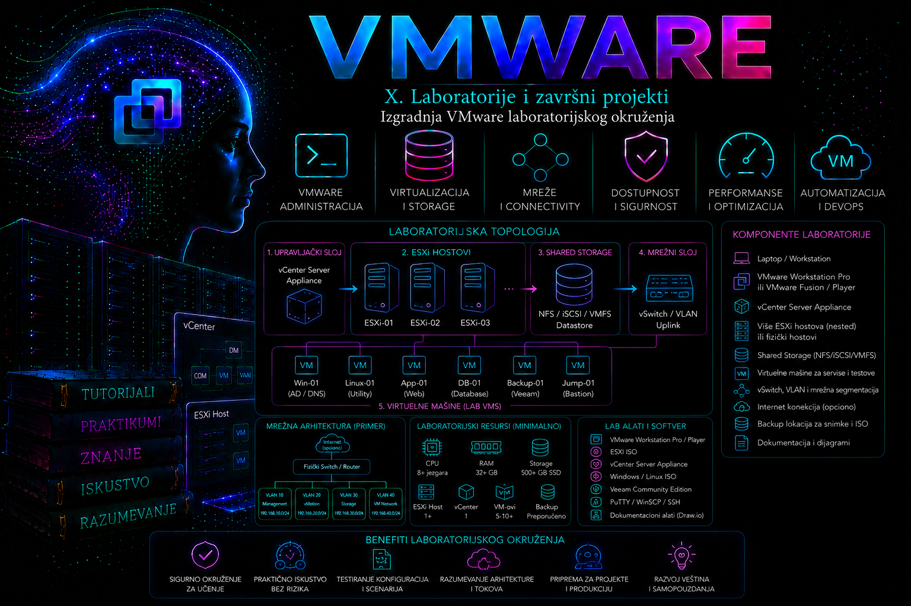

VMware

Projektni kontekst
Organizacija „Tashizza Systems” priprema interno laboratorijsko okruženje za obuku VMware administratora, proveru promena pre primene u produkciji i vežbanje standardnih operativnih postupaka. Produkciona infrastruktura organizacije koristi centralizovano upravljanje virtuelnim hostovima, odvojene mreže za administraciju, migraciju i storage saobraćaj, kao i zajednički datastore dostupan svim hostovima.
Do sada su administratori pojedinačne postupke proveravali na samostalnim VMware ESXi hostovima, bez dosledne topologije, jedinstvenog adresnog plana, centralnog vCenter Server sistema i dokumentovanog načina oporavka. Takvo početno stanje nije dovoljno za bezbedno testiranje promena koje se odnose na klaster, vMotion, zajednički storage, uloge, alarme i automatizaciju.
Poslovni zahtev je izgradnja izolovanog VMware laboratorijskog okruženja koje funkcionalno predstavlja umanjeni model enterprise vSphere infrastrukture. Laboratorija mora omogućiti instalaciju i centralizovano upravljanje najmanje dva ESXi hosta, kreiranje klastera, korišćenje zajedničkog NFS datastore-a, odvajanje glavnih vrsta mrežnog saobraćaja, testiranje migracije virtuelnih mašina, proveru privilegija i izvođenje kontrolisanih troubleshooting i recovery scenarija.
Projekat koristi VMware vSphere 8.0 Update 3 verzijsku liniju. Tačan podržani build ESXi i vCenter Server Appliance komponenti mora biti izabran prema raspoloživom instalacionom medijumu, licenci, Broadcom Compatibility Guide podacima i dokumentaciji koja važi u trenutku implementacije. Mešanje proizvoljno izabranih build verzija nije dozvoljeno. Zvanična dokumentacija za vSphere 8 obuhvata zasebne vodiče za instalaciju ESXi-ja, postavljanje vCenter Server Appliance sistema, mreže, storage, bezbednost, dostupnost i upravljanje resursima.
Cilj projekta
Cilj je projektovanje i izgradnja konzistentne VMware laboratorije nazvane TASH-LAB. Laboratorija će sadržati dva nested ESXi hosta, jedan vCenter Server Appliance, jednu infrastrukturnu Linux virtuelnu mašinu i najmanje dve testne virtuelne mašine. Svi sistemi biće povezani kroz unapred definisane laboratorijske mreže, a oba ESXi hosta koristiće isti NFS datastore.
Po završetku sva četiri dela projekta administrator mora biti sposoban da objasni arhitekturu, ponovi implementaciju, potvrdi funkcionalnost, pronađe namerno uvedenu grešku, vrati servis u stabilno stanje i dokumentuje konačnu konfiguraciju. Projekat se ne smatra završenim samo zato što su virtuelne mašine uključene. Uspeh se potvrđuje tek nakon mrežne, storage, upravljačke, bezbednosne i operativne validacije.
Početno i ciljano stanje
Početno stanje
Na raspolaganju je fizička administratorska radna stanica sa instaliranim podržanim desktop hipervizorom VMware Workstation Pro. Procesor podržava hardversku virtualizaciju, a Intel VT-x ili AMD-V i odgovarajuća podrška za nested virtualizaciju uključeni su u firmware-u računara.
Radna stanica još nema standardizovane virtuelne mreže za VMware laboratoriju. Ne postoje instalirani nested ESXi hostovi, vCenter Server Appliance, DNS zapisi, NTP plan, zajednički datastore, klaster niti dokumentovane administratorske uloge. Instalacioni ISO i OVA medijumi biće provereni pre korišćenja, uključujući naziv datoteke, verziju, build i kontrolni zbir kada je objavljen.
Ciljano stanje
Ciljano okruženje ima jedan logički vSphere datacenter, jedan klaster i dva ESXi hosta. Centralno upravljanje obavlja vCenter Server Appliance. Infrastrukturna Linux virtuelna mašina obezbeđuje DNS, NTP i NFS usluge isključivo za laboratoriju. Testne virtuelne mašine koriste zajednički datastore i mrežu radnih opterećenja.
Laboratorija se projektuje kao izolovana celina. Administratorski pristup dozvoljen je sa fizičke radne stanice, dok laboratorijski sistemi ne smeju nekontrolisano oglašavati DHCP, DNS, NTP ili druge infrastrukturne servise prema poslovnoj ili kućnoj mreži.
Analiza zahteva
Poslovni zahtevi
- Obezbediti stabilno okruženje za samostalnu obuku VMware administratora.
- Omogućiti proveru konfiguracionih promena pre njihove primene u važnijem okruženju.
- Omogućiti ponovljivo vežbanje instalacije, administracije, monitoringa, troubleshooting-a i recovery postupaka.
- Izolovati laboratorijske servise i kvarove od spoljne mreže.
- Dokumentovati početno, projektovano i konačno izvedeno stanje.
Funkcionalni zahtevi
- Dva ESXi hosta moraju biti dostupna kroz vCenter Server.
- Hostovi moraju pripadati klasteru
CL-TASH-COMP01. - Oba hosta moraju pristupati datastore-u
DS-NFS-SHARED01. - Laboratorija mora imati odvojene mreže za upravljanje, vMotion, NFS storage i radna opterećenja.
- Najmanje jedna testna virtuelna mašina mora moći da se premesti između hostova bez promene svoje mrežne konfiguracije.
- Administrator mora moći da koristi vSphere Client i PowerCLI za inventar i validaciju.
- Moraju postojati najmanje administratorska i read-only uloga.
- Moraju biti definisane tačke oporavka za infrastrukturne komponente i konfiguraciju.
Bezbednosni zahtevi
- Koristiti odvojene administratorske i servisne naloge gde god je to primenljivo.
- Ne čuvati lozinke u skriptama, dokumentaciji i komandnoj istoriji.
- Ograničiti spoljašnji pristup laboratorijskim mrežama na administratorsku radnu stanicu.
- SSH i ESXi Shell ne ostavljati trajno uključene bez opravdanja.
- Prihvatiti ili zameniti sertifikate tek nakon provere identiteta sistema.
- Primenjivati najmanje potrebne privilegije za naloge koji ne izvode pune administratorske zadatke.
- Voditi evidenciju promena, neuspešnih prijava i značajnih administratorskih operacija.
Bezbednosne postavke neće se primenjivati mehaničkim kopiranjem svih mogućih preporuka. VMware Security Configuration Guide koristiće se kao osnova za procenu rizika, dok će svaka izabrana kontrola biti proverena u odnosu na namenu laboratorije i mogućnost oporavka. Zvanični vodiči obezbeđuju preskriptivne smernice, klasifikaciju postavki i materijal za automatizovanu proveru usklađenosti.
Zahtevi dostupnosti i oporavka
Laboratorija ne zahteva neprekidnu dostupnost kao produkciona infrastruktura, ali gubitak jednog ESXi hosta ne sme onemogućiti pristup konfiguraciji drugog hosta, vCenter inventaru i zajedničkom datastore-u. Testne virtuelne mašine moraju biti projektovane tako da se, kada resursi dozvoljavaju, mogu ponovo uključiti na preostalom hostu.
Recovery vCenter Server Appliance sistema zasnivaće se prvenstveno na dokumentovanom file-based backup postupku i mogućnosti ponovnog postavljanja appliance-a. Snapshot spoljne virtuelne mašine može se koristiti kao kratkotrajna laboratorijska tačka povratka neposredno pre jasno definisane rizične promene, ali ne predstavlja trajni backup.
Zahtevi performansi
Cilj nije testiranje maksimalnih performansi, već stabilno izvršavanje upravljačkih servisa i malog broja testnih virtuelnih mašina. Spoljna radna stanica mora imati dovoljno fizičke memorije da ne zavisi od agresivnog swap-a. Storage na kome se nalaze nested virtuelne mašine treba da bude SSD ili NVMe uređaj sa dovoljnim slobodnim prostorom.
Performanse će se procenjivati prema utvrđenom baznom stanju laboratorije. Univerzalni pragovi neće se proglašavati bez merenja. Posebno će se pratiti potrošnja fizičke memorije spoljnog sistema, CPU contention, latencija virtuelnog diska, popunjenost datastore-a i vreme odziva vCenter servisa.
Zahtevi za monitoring
- Pratiti stanje ESXi hostova i vCenter servisa.
- Pratiti povezanost VMkernel adaptera i fizičkih uplink veza nested hostova.
- Pratiti dostupnost i slobodan prostor zajedničkog datastore-a.
- Pratiti alarme za gubitak host komunikacije, nedostupan datastore i prekid redundantnosti.
- Pratiti događaje vezane za prijavljivanje, promene privilegija i promene konfiguracije.
- Sačuvati bazno stanje resursa pre simulacije kvarova.
Pretpostavke i ograničenja
Pretpostavke
- Spoljni procesor podržava i ima uključenu hardversku virtualizaciju.
- VMware Workstation Pro može nested ESXi virtuelnim mašinama izložiti potrebna virtualizaciona proširenja.
- Administrator poseduje zakonit pristup instalacionim medijumima i odgovarajućim licencama ili evaluacionim pravima.
- Radna stanica ima najmanje 64 GB fizičke memorije za punu topologiju bez stalnog gašenja ključnih komponenti.
- Na brzom lokalnom storage-u dostupno je najmanje 600 GB slobodnog prostora.
- Administrator ima lokalna administrativna prava na spoljnom hipervizoru.
- DNS i NTP servisi laboratorije mogu raditi na infrastrukturnoj Linux virtuelnoj mašini.
Ograničenja
- Nested ESXi hostovi ne pružaju performanse fizičkih enterprise servera.
- Fizička redundantnost napajanja, mrežnih adaptera i storage kontrolera ne može biti potpuno simulirana na jednoj radnoj stanici.
- Otkaz fizičke radne stanice prekida celu laboratoriju.
- NFS servis na jednoj Linux virtuelnoj mašini predstavlja jedinstvenu tačku otkaza.
- VMware HA ponašanje može se funkcionalno vežbati, ali rezultat zavisi od raspoloživih nested resursa i stanja vCenter klastera.
- Licencne funkcije moraju biti proverene pre planiranja vežbi koje zavise od vMotion-a, DRS-a ili drugih naprednih mogućnosti.
- Laboratorija ne potvrđuje kompatibilnost konkretne fizičke opreme sa produkcionim ESXi sistemom.
Projektovana arhitektura
Logička topologija
Spoljni sloj čini fizička radna stanica WS-TASH-01 sa VMware Workstation Pro hipervizorom. Na njoj se izvršavaju infrastrukturna virtuelna mašina, dva nested ESXi hosta i vCenter Server Appliance. Testne virtuelne mašine izvršavaju se unutar nested ESXi hostova.
WS-TASH-01
|
+-- VMware Workstation Pro
|
+-- INFRA-TASH-01
| +-- DNS
| +-- NTP
| +-- NFS
|
+-- ESX-TASH-01
| +-- VMkernel Management
| +-- VMkernel vMotion
| +-- VMkernel NFS
| +-- VM Network
|
+-- ESX-TASH-02
| +-- VMkernel Management
| +-- VMkernel vMotion
| +-- VMkernel NFS
| +-- VM Network
|
+-- VC-TASH-01
+-- Datacenter: DC-TASH-01
+-- Cluster: CL-TASH-COMP01
+-- ESX-TASH-01
+-- ESX-TASH-02
Nested workload:
+-- APP-TASH-01
+-- APP-TASH-02Inventar komponenti
| Komponenta | Naziv | Uloga | Planirani resursi | Verzijski kontekst |
|---|---|---|---|---|
| Fizička radna stanica | WS-TASH-01 | Spoljni laboratorijski host | 12 ili više CPU thread-ova, 64 GB RAM, 600 GB slobodnog SSD prostora | Podržani 64-bitni host OS |
| Desktop hipervizor | VMware Workstation Pro | Izvršavanje laboratorijskih VM-ova | Virtuelne mreže i nested virtualizacija | Aktuelni kompatibilni 17.x ili noviji build |
| Infrastrukturna VM | INFRA-TASH-01 | DNS, NTP i NFS | 2 vCPU, 4 GB RAM, 40 GB OS i 250 GB NFS disk | Podržana stabilna Linux distribucija |
| Nested ESXi host | ESX-TASH-01 | Compute host | 4 vCPU, 16 GB RAM, 32 GB boot, 80 GB lokalni datastore | vSphere 8.0 Update 3 linija |
| Nested ESXi host | ESX-TASH-02 | Compute host | 4 vCPU, 16 GB RAM, 32 GB boot, 80 GB lokalni datastore | vSphere 8.0 Update 3 linija |
| Management appliance | VC-TASH-01 | vCenter Server Appliance | Tiny deployment profil, prema zvaničnim zahtevima izabranog build-a | Kompatibilan vCenter 8.0 Update 3 build |
| Testna VM | APP-TASH-01 | Primarno testno opterećenje | 2 vCPU, 2 GB RAM, 20 GB thin disk | Podržani Linux guest OS |
| Testna VM | APP-TASH-02 | Sekundarno testno opterećenje | 1 vCPU, 2 GB RAM, 20 GB thin disk | Podržani Linux guest OS |
Resursi predstavljaju projektovanu početnu vrednost, a ne univerzalnu preporuku. Pre implementacije obavezno se proveravaju minimalni zahtevi konkretne VCSA verzije i realno raspoloživa memorija spoljnog hosta. Resursi se ne smanjuju ispod podržanih vrednosti samo da bi appliance mogao privremeno da se uključi.
Mrežna arhitektura i adresni plan
Projektom se uvode četiri izolovane laboratorijske mreže. Svaka mreža ima jasnu namenu. Spajanje svih servisa na jednu virtuelnu mrežu bilo bi jednostavnije, ali ne bi omogućilo pravilno vežbanje segmentacije, VMkernel servisa i izolovanja kvara.
| Mreža | Workstation oznaka | Segment | VLAN ID u nested vSphere sloju | Namena |
|---|---|---|---|---|
| LAB-MGMT | VMnet2 | 10.100.10.0/24 | 10 | ESXi, VCSA i infrastrukturno upravljanje |
| LAB-VMOTION | VMnet3 | 10.100.20.0/24 | 20 | vMotion saobraćaj |
| LAB-STORAGE | VMnet4 | 10.100.30.0/24 | 30 | NFS saobraćaj |
| LAB-WORKLOAD | VMnet5 | 10.100.40.0/24 | 40 | Testne virtuelne mašine |
VLAN identifikatori predstavljaju logičku oznaku u nested vSphere okruženju. Spoljni VMware Workstation segmenti već fizički odvajaju saobraćaj u zasebne host-only mreže. Zbog toga se VLAN tagovanje neće uvoditi na mestima na kojima spoljni virtuelni switch ne prenosi trunk saobraćaj. U drugom delu biće izabrana konfiguracija koja sprečava pogrešno dvostruko tagovanje.
| Sistem ili adapter | FQDN | IP adresa | Mreža | Gateway |
|---|---|---|---|---|
| INFRA-TASH-01 management | infra-tash-01.lab.tashizza.local | 10.100.10.10 | LAB-MGMT | Nije potreban za internu komunikaciju |
| INFRA-TASH-01 NFS | infra-tash-01.lab.tashizza.local | 10.100.30.10 | LAB-STORAGE | Nema |
| VC-TASH-01 | vc-tash-01.lab.tashizza.local | 10.100.10.20 | LAB-MGMT | 10.100.10.1, samo ako je rutiranje projektovano |
| ESX-TASH-01 management | esx-tash-01.lab.tashizza.local | 10.100.10.21 | LAB-MGMT | 10.100.10.1, samo ako je potrebno |
| ESX-TASH-02 management | esx-tash-02.lab.tashizza.local | 10.100.10.22 | LAB-MGMT | 10.100.10.1, samo ako je potrebno |
| ESX-TASH-01 vMotion | Nije potreban poseban DNS zapis | 10.100.20.21 | LAB-VMOTION | Nema |
| ESX-TASH-02 vMotion | Nije potreban poseban DNS zapis | 10.100.20.22 | LAB-VMOTION | Nema |
| ESX-TASH-01 NFS | Nije potreban poseban DNS zapis | 10.100.30.21 | LAB-STORAGE | Nema |
| ESX-TASH-02 NFS | Nije potreban poseban DNS zapis | 10.100.30.22 | LAB-STORAGE | Nema |
| APP-TASH-01 | app-tash-01.lab.tashizza.local | 10.100.40.101 | LAB-WORKLOAD | Prema izabranom laboratorijskom rutiranju |
| APP-TASH-02 | app-tash-02.lab.tashizza.local | 10.100.40.102 | LAB-WORKLOAD | Prema izabranom laboratorijskom rutiranju |
Domen lab.tashizza.local koristi se samo u izolovanoj laboratoriji. Pre postavljanja VCSA sistema moraju postojati ispravni forward i reverse DNS zapisi za vCenter i oba ESXi hosta. Promena sistemskog imena vCenter Server Appliance sistema nakon postavljanja nije deo redovnog postupka i ne koristi se kao zamena za pravilno DNS planiranje.
NTP izvor biće INFRA-TASH-01, koji svoju tačnost dobija od dozvoljenog spoljnog izvora ili od spoljnog hosta, zavisno od mogućnosti izolovane mreže. Važnije od izbora konkretnog javnog izvora jeste da VCSA, ESXi hostovi i administrativna radna stanica imaju međusobno usklađeno vreme.
Storage arhitektura
Infrastrukturna virtuelna mašina izvozi NFS share sa putanje /srv/nfs/vsphere01. ESXi hostovi montiraju isti share kao datastore DS-NFS-SHARED01. NFS pristup odvija se isključivo kroz mrežu LAB-STORAGE.
| Storage objekat | Lokacija | Kapacitet | Namena | Zaštita |
|---|---|---|---|---|
| Lokalni datastore hosta 1 | ESX-TASH-01 | Približno 80 GB | Privremene ISO datoteke i pomoćni objekti | Nije zajednički i nije primarna lokacija radnih VM-ova |
| Lokalni datastore hosta 2 | ESX-TASH-02 | Približno 80 GB | Privremene ISO datoteke i pomoćni objekti | Nije zajednički i nije primarna lokacija radnih VM-ova |
| DS-NFS-SHARED01 | /srv/nfs/vsphere01 na INFRA-TASH-01 | Približno 250 GB | Testne VM datoteke i zajednički sadržaj | Backup konfiguracije i kontrolisan backup važnih laboratorijskih objekata |
NFS je izabran zato što omogućava jednostavno i jasno demonstriranje zajedničkog datastore-a bez uvođenja dodatne iSCSI infrastrukture. Ograničenje je jedinstvena tačka otkaza na sistemu INFRA-TASH-01. To je prihvatljivo za ovaj projekat jer će kvar storage servisa biti korišćen kao kontrolisani troubleshooting scenario, a ne kao model produkcione visoke dostupnosti.
Dozvola NFS izvoza ograničiće se na adrese 10.100.30.21 i 10.100.30.22, odnosno na tačno definisane ESXi storage VMkernel interfejse. Široki pristup celom adresnom prostoru neće se koristiti bez opravdanja.
vSphere inventar i standardi imenovanja
| Tip objekta | Naziv | Namena |
|---|---|---|
| vCenter Server | VC-TASH-01 | Centralno upravljanje |
| Datacenter | DC-TASH-01 | Logički kontejner laboratorije |
| Cluster | CL-TASH-COMP01 | Compute klaster |
| ESXi host | ESX-TASH-01 | Prvi nested host |
| ESXi host | ESX-TASH-02 | Drugi nested host |
| NFS datastore | DS-NFS-SHARED01 | Zajednički datastore |
| Management port group | PG-MGMT-10 | Upravljački saobraćaj |
| vMotion port group | PG-VMOTION-20 | Migracioni saobraćaj |
| NFS port group | PG-NFS-30 | Storage saobraćaj |
| VM port group | PG-WORKLOAD-40 | Testna radna opterećenja |
| Resource pool | RP-LAB-WORKLOADS | Grupisanje testnih VM-ova |
| VM folder | FOLDER-LAB-VM | Organizacija testnih VM-ova |
Nazivi se tokom projekta ne menjaju. Ako administrator prilikom implementacije napravi objekat sa pogrešnim nazivom, promena se evidentira i ispravlja pre nego što od tog objekta nastanu zavisnosti.
Projektantske odluke
Izbor nested arhitekture
Alternativa je korišćenje dva fizička ESXi servera. Takvo rešenje vernije predstavlja produkcionu infrastrukturu i omogućava realnije testiranje hardverske kompatibilnosti, ali zahteva dodatnu opremu, mrežne adaptere, switch portove, napajanje i veći operativni trošak.
Za ovaj projekat izabrana je nested arhitektura jer je cilj vežbanje vSphere administracije, a ne sertifikacija fizičke opreme. Dva nested hosta omogućavaju rad sa vCenter inventarom, klasterom, zajedničkim datastore-om, vMotion mrežom, događajima i kontrolisanim kvarovima.
Izbor vSphere Standard Switch pristupa
Distributed switch pruža centralizovano upravljanje i naprednije funkcije, ali zahteva odgovarajuće licencne mogućnosti i uvodi dodatnu zavisnost od vCenter upravljanja. Za osnovnu laboratoriju izabrani su vSphere Standard Switch objekti na oba hosta, uz identične nazive port grupa i doslednu konfiguraciju.
Takav pristup omogućava vežbanje mrežnog dizajna bez nepotrebnog licencnog rizika. Nedostatak je mogućnost konfiguracionog odstupanja između hostova. Zbog toga će se jednakost mrežne konfiguracije potvrđivati PowerCLI proverama.
Izbor NFS datastore-a
iSCSI bi omogućio vežbanje softverskog adaptera, discovery procesa, LUN identifikacije i multipathing-a. Međutim, za primarni cilj ovog projekta NFS pruža dovoljno zajedničke storage funkcionalnosti uz manji broj komponenti. iSCSI ostaje preporučeno kasnije proširenje laboratorije.
Izbor administratorskih alata
vSphere Client koristiće se za inicijalnu instalaciju, vizuelni pregled inventara i operacije kod kojih je korisno istovremeno pratiti više objekata. ESXCLI, vim-cmd i lokalne shell komande koristiće se za host-level proveru. PowerCLI će služiti za inventar, poređenje hostova i ponovljivu validaciju.
Aktuelni Broadcom Developer Portal VCF PowerCLI opisuje kao skup modula za automatizovano upravljanje VMware okruženjima. Instalacija se planira korišćenjem modula VCF.PowerCLI, a pre automatizacije proveriće se dostupne komande i ponašanje verzije koja je stvarno instalirana.
Kada se ESXCLI poziva kroz PowerCLI, koristiće se podržani V2 interfejs. V1 interfejs je označen kao zastareo i ne planira se za nove skripte.
Bezbednosni koncept
Nalozi i uloge
| Nalog ili uloga | Namena | Privilegije | Napomena |
|---|---|---|---|
administrator@vsphere.local |
Početno SSO upravljanje | Pune SSO i vCenter privilegije | Koristi se za inicijalnu konfiguraciju i recovery, ne za svaki rutinski zadatak |
lab-admin@vsphere.local |
Redovna administracija laboratorije | Administratorska uloga na DC-TASH-01 |
Poseban nalog sa jedinstvenom tajnom vrednošću |
lab-audit@vsphere.local |
Pregled inventara, događaja i konfiguracije | Read-only | Koristi se za proveru najmanjih potrebnih privilegija |
root na ESXi hostovima |
Početna instalacija i recovery | Lokalne pune privilegije | Ne koristi se kao zajednički svakodnevni identitet |
svc-nfs ili sistemski NFS identitet |
NFS servis na Linux sistemu | Samo potrebna prava nad NFS putanjom | Nema interaktivne administratorske privilegije |
Lozinke neće biti prikazane u projektu. Dokumentacija koristi oznaku [TAJNA VREDNOST NIJE PRIKAZANA]. Tajne se unose interaktivno ili preuzimaju iz odgovarajućeg bezbednog mehanizma, a ne upisuju direktno u PowerCLI i Bash skripte.
Mrežna zaštita
Sve laboratorijske mreže projektovane su kao host-only mreže. Ako je pristup internetu potreban za ažuriranje infrastrukturne Linux virtuelne mašine, koristiće se privremeni dodatni NAT adapter ili kontrolisano rutiranje. Nakon ažuriranja dodatna veza se uklanja ili ograničava.
vMotion i NFS mreže nemaju podrazumevani gateway. Time se smanjuje mogućnost da saobraćaj napusti predviđeni segment. Management pristup ograničava se na administratorsku radnu stanicu i ne izlaže se neposredno javnoj mreži.
Sertifikati i identitet sistema
Laboratorija inicijalno može koristiti sertifikate koje izdaje ugrađena VMware Certificate Authority komponenta. Administrator pre prihvatanja upozorenja proverava FQDN, IP adresu i fingerprint. Slepo isključivanje provere sertifikata nije prihvatljivo trajno rešenje.
ESXi servisni pristup
ESXi Shell i SSH uključuju se samo za konkretan administrativni ili dijagnostički zadatak. Po završetku zadatka servis se isključuje, proverava se da nema aktivnih nepotrebnih sesija i evidentira se razlog korišćenja.
Kriterijumi prihvatanja
| Oznaka | Kriterijum | Način provere | Očekivani rezultat |
|---|---|---|---|
| AC-01 | DNS i NTP infrastruktura je funkcionalna | Forward i reverse lookup, provera vremenske sinhronizacije | Svi management sistemi razrešavaju imena i imaju usklađeno vreme |
| AC-02 | Dva ESXi hosta su centralno upravljana | vSphere Client i PowerCLI inventar | Oba hosta imaju connected stanje |
| AC-03 | Klaster je kreiran | Pregled objekta CL-TASH-COMP01 |
Oba hosta pripadaju istom klasteru |
| AC-04 | Mreže su logički odvojene | Pregled VMkernel adaptera, port grupa i routing tabela | Management, vMotion, NFS i workload koriste projektovane segmente |
| AC-05 | Zajednički datastore je dostupan | Pregled datastore mount stanja na oba hosta | DS-NFS-SHARED01 je dostupan sa oba hosta |
| AC-06 | Testna VM radi na zajedničkom storage-u | Pregled VM datoteka, power operacija i guest povezivosti | APP-TASH-01 se stabilno izvršava |
| AC-07 | Migracija između hostova je moguća | Kontrolisani vMotion test | VM menja host bez gubitka projektovane mrežne dostupnosti |
| AC-08 | Read-only pristup je ograničen | Prijava nalogom lab-audit@vsphere.local |
Pregled je moguć, konfiguracione promene nisu dozvoljene |
| AC-09 | Kontrolisani incident je uspešno obrađen | Simulacija prekida NFS pristupa | Uzrok je pronađen, servis oporavljen i događaj dokumentovan |
| AC-10 | Postoji dokumentovan recovery i rollback postupak | Pregled dokumentacije i praktična provera izabrane tačke povratka | Administrator može vratiti funkcionalnost bez nagađanja |
Plan implementacije
- Proveriti fizičke resurse, firmware virtualizaciona proširenja i slobodan storage.
- Pribaviti i verifikovati kompatibilne instalacione medijume.
- Kreirati spoljne VMware Workstation virtuelne mreže.
- Postaviti
INFRA-TASH-01i konfigurisati DNS, NTP i NFS. - Kreirati nested virtuelne mašine
ESX-TASH-01iESX-TASH-02. - Instalirati ESXi i konfigurisati management mrežu, DNS i NTP.
- Proveriti forward i reverse DNS pre postavljanja vCenter Server Appliance sistema.
- Postaviti
VC-TASH-01korišćenjem odgovarajućeg deployment profila. - Kreirati datacenter, klaster, foldere i resource pool.
- Dodati oba ESXi hosta u vCenter inventar.
- Kreirati standardne switch i port group objekte i VMkernel adaptere.
- Montirati
DS-NFS-SHARED01na oba hosta. - Kreirati administratorske i audit naloge i primeniti uloge.
- Postaviti testne virtuelne mašine i VMware Tools.
- Izvršiti inicijalnu funkcionalnu validaciju i evidentirati bazno stanje.
Posle svake važne faze izvodi se lokalna provera. Ne prelazi se na VCSA postavljanje ako DNS nije ispravan, niti se testna virtuelna mašina kreira na zajedničkom datastore-u dok oba hosta ne potvrde stabilan NFS pristup.
Plan validacije
Validacija spoljnog sloja
- Provera dostupne fizičke memorije, CPU virtualizacije i slobodnog prostora.
- Provera da sve host-only mreže koriste tačne segmente i da se ne preklapaju sa postojećim mrežama.
- Provera da laboratorijski DHCP servis, ako postoji, ne utiče na druge segmente.
Validacija infrastrukturnih servisa
- Forward i reverse DNS provera za vCenter i ESXi hostove.
- Provera NTP izvora i vremenskog odstupanja.
- Provera NFS export liste, dozvoljenih klijenata i firewall pravila.
Validacija vSphere sloja
- Provera health stanja vCenter servisa.
- Provera connected stanja oba hosta.
- Poređenje switch, port group i VMkernel konfiguracije.
- Provera VMkernel komunikacije korišćenjem odgovarajuće izlazne mreže.
- Provera mount stanja zajedničkog datastore-a.
- Provera kreiranja, uključivanja i migracije testne virtuelne mašine.
- Provera događaja i alarma nastalih tokom implementacije.
Za VMkernel proveru koristiće se vmkping sa eksplicitno izabranim interfejsom kada je potrebno potvrditi konkretnu vMotion ili NFS putanju. Takva provera je pouzdanija od običnog ping testa koji može koristiti drugi VMkernel adapter. Zvanični Broadcom troubleshooting materijal preporučuje VMkernel testove za izolovanje problema sa komunikacijom između hostova.
Bezbednosna validacija
- Provera da audit nalog nema pravo menjanja konfiguracije.
- Provera statusa SSH i ESXi Shell servisa.
- Provera administratorskih događaja i neuspešnih prijava.
- Provera da dokumentacija i skripte ne sadrže tajne vrednosti.
- Provera da NFS export nije otvoren klijentima izvan storage mreže.
Plan recovery-ja i rollback-a
Razlika između recovery-ja i rollback-a
Recovery se pokreće kada je funkcionalnost već izgubljena, na primer kada oba ESXi hosta izgube pristup NFS datastore-u. Cilj je obnavljanje servisa, očuvanje podataka i potvrda stabilnosti.
Rollback se pokreće kada nova promena ne zadovolji unapred definisane kriterijume. Primer je vraćanje prethodne mrežne konfiguracije nakon što novi VMkernel adapter izazove gubitak management povezivosti. Rollback ne sme biti automatska reakcija bez procene uticaja na zavisne sisteme.
Tačke povratka
| Komponenta | Tačka povratka | Okidač | Planirana akcija |
|---|---|---|---|
| VMware Workstation mreže | Dokumentovan početni Virtual Network Editor raspored | Preklapanje mreža ili gubitak pristupa | Vraćanje prethodnih VMnet segmenata |
| INFRA-TASH-01 | Backup konfiguracionih datoteka i kratkotrajni snapshot pre rizične promene | Neuspešna DNS, NTP ili NFS izmena | Vraćanje konkretne konfiguracije ili snapshot-a uz proveru podataka |
| ESXi mreža | Zabeležen standard switch i VMkernel raspored | Gubitak management pristupa | Oporavak kroz DCUI i vraćanje poslednje poznate ispravne konfiguracije |
| VCSA | File-based backup i dokumentovani parametri postavljanja | Neupotrebljiv appliance ili neuspešna značajna promena | Restore kroz podržani VCSA postupak |
| Testna VM | Guest backup ili ponovljivi template | Oštećenje guest sistema | Restore podataka ili ponovno postavljanje VM-a |
Kriterijumi za rollback
- Management pristup nije vraćen u predviđenom prozoru nakon promene.
- Promena uzrokuje gubitak pristupa datastore-u na oba hosta.
- DNS ili NTP odstupanje sprečava pouzdanu autentikaciju i upravljanje.
- Nova konfiguracija narušava najmanje potrebne privilegije.
- Validaciona provera ne može potvrditi cilj promene, a rizik daljeg ispitivanja raste.
Identifikovani rizici
| Rizik | Verovatnoća | Uticaj | Kontrola |
|---|---|---|---|
| Nedovoljno fizičke memorije | Srednja | Visok | Provera resursa pre početka i fazno uključivanje neključnih VM-ova |
| Pogrešna DNS konfiguracija pre VCSA postavljanja | Srednja | Visok | Obavezna forward i reverse validacija |
| Preklapanje laboratorijskog i postojećeg IP opsega | Niska | Visok | Inventar postojećih mreža i host-only izolacija |
| Neusklađeni build-ovi ESXi i VCSA | Srednja | Visok | Provera release notes i interoperabilnosti pre instalacije |
| Gubitak NFS servisa | Srednja | Visok | Backup konfiguracije, monitoring servisa i dokumentovan recovery |
| Pogrešna mrežna konfiguracija jednog ESXi hosta | Srednja | Srednji | Identični standardi imenovanja i PowerCLI poređenje |
| Nekontrolisano korišćenje snapshot-a | Srednja | Srednji | Vremenski ograničeni snapshot-i, evidencija svrhe i obavezno uklanjanje |
| Izlaganje administratorskih servisa | Niska | Visok | Host-only mreže, firewall ograničenja i isključivanje nepotrebnog SSH pristupa |
| Jedinstvena tačka otkaza spoljnog hosta | Niska | Visok | Backup konfiguracije i mogućnost ponovne izgradnje laboratorije |
Preduslovi za implementaciju
Hardverski i platformski preduslovi
- Hardverska virtualizacija uključena u firmware-u.
- Dovoljna količina fizičke memorije i brzog lokalnog storage-a.
- Stabilna verzija VMware Workstation Pro kompatibilna sa host operativnim sistemom.
- Isključeni ili pravilno usklađeni konkurentski hypervisor mehanizmi koji mogu sprečiti nested virtualizaciju.
- Administratorski pristup konfiguraciji spoljnih virtuelnih mreža.
Instalacioni preduslovi
- ESXi instalacioni ISO odgovarajuće vSphere 8.0 Update 3 verzijske linije.
- Kompatibilan VCSA instalacioni medijum.
- Instalacioni medijum izabrane Linux distribucije.
- Guest OS medijum za testne virtuelne mašine.
- Dokumentovane licence ili evaluacioni periodi potrebni za planirane funkcije.
Dokumentacioni preduslovi
- Popunjen inventar komponenti i verzija.
- Odobren adresni plan bez preklapanja.
- Definisani DNS zapisi i NTP izvor.
- Definisani nazivi vSphere objekata.
- Definisane tajne vrednosti u bezbednom spremištu.
- Pripremljen dnevnik promena.
- Pripremljena validaciona matrica prema kriterijumima AC-01 do AC-10.
Početna evidencija promena
| ID promene | Planirana promena | Vlasnik | Rizik | Tačka povratka |
|---|---|---|---|---|
| CHG-LAB-001 | Kreiranje VMware Workstation mreža VMnet2–VMnet5 | Lab administrator | Srednji | Izvoz ili zapis postojeće mrežne konfiguracije |
| CHG-LAB-002 | Postavljanje infrastrukturne Linux virtuelne mašine | Lab administrator | Nizak | Čista VM tačka pre konfiguracije servisa |
| CHG-LAB-003 | Postavljanje nested ESXi hostova | VMware administrator | Srednji | Dokumentovani VM parametri i mogućnost ponovnog postavljanja |
| CHG-LAB-004 | Postavljanje vCenter Server Appliance sistema | VMware administrator | Visok | Dokumentovan deployment obrazac i provereni DNS podaci |
Kontrolna tačka projektovanja i pripreme
Faza projektovanja smatra se završenom kada su potvrđeni fizički resursi spoljnog hosta, podrška za nested virtualizaciju, kompatibilni instalacioni medijumi i licencne mogućnosti. Adresni plan, DNS imena, NTP izvor, storage putanja, nazivi vSphere objekata, administratorske uloge i kriterijumi prihvatanja moraju biti odobreni pre prve implementacione promene.
Laboratorija je spremna za implementaciju kada su mrežni segmenti rezervisani, tajne vrednosti bezbedno pripremljene, tačke povratka dokumentovane i promena CHG-LAB-001 odobrena. Nijedna vrednost definisana u ovom delu ne menja se proizvoljno tokom implementacije. Svako neophodno odstupanje mora imati tehničko obrazloženje, procenu uticaja, novu validacionu proveru i zapis u dnevniku promena.
Pokretanje implementacione faze
Implementacija počinje tek nakon potvrde kontrolne tačke projektovanja: fizički resursi spoljnog hosta su provereni, instalacioni medijumi su identifikovani, mrežni segmenti su rezervisani, DNS imena i IP adrese odobreni, a tajne vrednosti pripremljene u bezbednom spremištu. Sve promene izvode se prema redosledu definisanom u planu kako zavisne komponente ne bi bile postavljene pre servisa od kojih zavise.
Administrator vodi dnevnik promena od prve intervencije na VMware Workstation mrežama. Za svaku promenu beleže se vreme početka, izvršilac, pogođena komponenta, izvršena radnja, rezultat inicijalne provere i eventualno odstupanje od plana. Lozinke, privatni ključevi i drugi tajni podaci ne unose se u dnevnik.
Implementacija se izvodi sa administratorske radne stanice WS-TASH-01. Operacije nad spoljnim virtuelnim mrežama zahtevaju lokalne administratorske privilegije. Linux konfiguracija izvršava se nalogom koji koristi sudo, dok se početna ESXi konfiguracija obavlja lokalnim nalogom root. Nakon postavljanja vCenter Server Appliance sistema rutinska administracija prelazi na namenski nalog lab-admin@vsphere.local.
Priprema instalacionih medijuma i radnog direktorijuma
Pre kreiranja prve virtuelne mašine administrator formira radni direktorijum u kome se čuvaju instalacioni medijumi, dokumentacija promene, izvezene konfiguracije i validacioni rezultati. Primer organizacije direktorijuma na Linux radnoj stanici prikazan je u nastavku.
mkdir -p ~/vmware-lab/{iso,ova,checksums,config,logs,backups}
chmod 700 ~/vmware-lab/backups
chmod 700 ~/vmware-lab/config
Komande se izvršavaju kao korisnik koji upravlja laboratorijom. Direktorijumi backups i config ograničeni su na vlasnika zato što kasnije mogu sadržati konfiguracione datoteke sa imenima sistema, adresama i drugim operativno osetljivim podacima.
Za svaki preuzeti ISO ili appliance medijum proverava se kontrolni zbir kada ga proizvođač objavljuje. Vrednost u sledećem primeru predstavlja mesto za stvarni zbir preuzet sa zvaničnog portala.
cd ~/vmware-lab/iso
sha256sum VMware-VMvisor-Installer-8.0U3-[BUILD].x86_64.iso
cd ~/vmware-lab/ova
sha256sum VMware-vCenter-Server-Appliance-8.0.3.[BUILD].isoDobijeni zbir mora biti identičan objavljenoj vrednosti. Ako se vrednosti razlikuju, medijum se ne koristi. Datoteka se ponovo preuzima iz pouzdanog izvora, a neuspešna provera evidentira se kao bezbednosni i integritetski događaj.
ESXi i vCenter Server Appliance moraju pripadati kompatibilnoj vSphere verzijskoj liniji. U ovom projektu koristi se vSphere 8.0 Update 3 linija, ali se konkretan build bira prema raspoloživom instalacionom medijumu, kompatibilnosti i važećim Broadcom release notes dokumentima. Postupak postavljanja VCSA sistema prati zvanični vCenter Server Installation and Setup vodič.
Kreiranje spoljnih laboratorijskih mreža
Prva infrastrukturna promena je kreiranje četiri host-only mreže u VMware Workstation Pro okruženju. Pre izmene administrator snima postojeću konfiguraciju Virtual Network Editor-a ili beleži sve postojeće VMnet segmente. Ovaj zapis predstavlja tačku lokalnog rollback-a za promenu CHG-LAB-001.
| VMnet | Naziv u projektu | Subnet | DHCP | Povezivanje hosta |
|---|---|---|---|---|
| VMnet2 | LAB-MGMT | 10.100.10.0/24 | Isključen | Uključeno |
| VMnet3 | LAB-VMOTION | 10.100.20.0/24 | Isključen | Po potrebi uključeno radi dijagnostike |
| VMnet4 | LAB-STORAGE | 10.100.30.0/24 | Isključen | Uključeno radi administracije NFS sistema |
| VMnet5 | LAB-WORKLOAD | 10.100.40.0/24 | Isključen | Po potrebi uključeno |
VMware Workstation DHCP isključuje se na sva četiri segmenta zato što projekat koristi statički adresni plan. Time se izbegava situacija u kojoj nested ESXi host, VCSA ili infrastrukturna virtuelna mašina dobiju nepredviđenu adresu. Nijedan od ovih segmenata ne konfiguriše se kao bridged mreža.
Nakon kreiranja mreža administrator proverava da se subneti ne preklapaju sa postojećim interfejsima na spoljnom hostu.
ip -br address
ip route show
Očekuje se da se mreže 10.100.10.0/24, 10.100.20.0/24, 10.100.30.0/24 i 10.100.40.0/24 pojavljuju samo na odgovarajućim VMware interfejsima. Ako neki segment već postoji u routing tabeli zbog druge laboratorije, implementacija se zaustavlja. Ne menja se proizvoljno samo jedna IP adresa; ažuriraju se adresni plan, DNS zapisi, firewall pravila i sva zavisna dokumentacija.
Lokalni rollback mrežne promene
Ako nakon kreiranja VMnet mreža spoljni host izgubi pristup postojećoj mreži ili se pojavi konflikt ruta, nove mreže se uklanjaju ili vraćaju na prethodno zabeleženo stanje. Posle rollback-a ponovo se proveravaju interfejsi i routing tabela. Promena se ne proglašava uspešnom dok postojeća povezivost spoljnog hosta nije potvrđena.
Postavljanje infrastrukturnog sistema INFRA-TASH-01
Virtuelna mašina INFRA-TASH-01 kreira se na VMware Workstation hostu sa dva vCPU-a, 4 GB RAM-a, sistemskim diskom od 40 GB i dodatnim virtualnim diskom od 250 GB za NFS podatke. Prvi mrežni adapter povezuje se na VMnet2, a drugi na VMnet4.
Na sistem se instalira podržana stabilna Linux distribucija. Tokom instalacije host name se postavlja na infra-tash-01. Management adapter dobija adresu 10.100.10.10/24, dok storage adapter dobija 10.100.30.10/24. Podrazumevani gateway, ako je potreban, postavlja se isključivo na management interfejsu. Storage interfejs nema gateway.
Posle instalacije administrator proverava adresiranje i rute:
hostnamectl
ip -br address
ip route show
Očekuje se da sistemsko ime bude infra-tash-01, da oba interfejsa imaju projektovane adrese i da ne postoji podrazumevana ruta preko storage mreže. Ako je gateway greškom dodat na oba interfejsa, on se uklanja sa storage adaptera pre nastavka.
Priprema NFS diska
Dodatni disk se identifikuje pre particionisanja. Administrator ne pretpostavlja da je uređaj uvek /dev/sdb.
lsblk -o NAME,SIZE,TYPE,FSTYPE,MOUNTPOINTS,MODEL
sudo blkid
Nakon potvrde tačnog uređaja kreiraju se particija, datotečni sistem i trajna mount tačka. U nastavku je prikazan primer za uređaj /dev/sdb; oznaka se mora prilagoditi stvarnom sistemu.
sudo parted /dev/sdb --script mklabel gpt
sudo parted /dev/sdb --script mkpart primary xfs 1MiB 100%
sudo mkfs.xfs -L VSPHERE_NFS01 /dev/sdb1
sudo mkdir -p /srv/nfs/vsphere01
sudo blkid /dev/sdb1
Dobijeni UUID upisuje se u /etc/fstab. Pre restarta proverava se sintaksa i mogućnost montiranja.
sudoedit /etc/fstab
UUID=[STVARNI-UUID] /srv/nfs/vsphere01 xfs defaults,nofail 0 2
sudo mount -a
findmnt /srv/nfs/vsphere01
df -hT /srv/nfs/vsphere01
Ako komanda mount -a prijavi grešku, zapis u /etc/fstab se odmah ispravlja. Sistem se ne restartuje sa neproverenom konfiguracijom. Lokalni rollback sastoji se od komentarisanja novog zapisa i ručnog demontiranja pogrešno montiranog sistema datoteka.
Konfiguracija DNS i NTP servisa
Na sistemu INFRA-TASH-01 postavlja se interni DNS servis koji autoritativno razrešava zonu lab.tashizza.local i odgovarajuće reverse zone. Konkretni paket može biti BIND ili ekvivalentni podržani servis iz izabrane distribucije. Konfiguracija mora sadržati najmanje sledeće zapise:
infra-tash-01.lab.tashizza.local. A 10.100.10.10
vc-tash-01.lab.tashizza.local. A 10.100.10.20
esx-tash-01.lab.tashizza.local. A 10.100.10.21
esx-tash-02.lab.tashizza.local. A 10.100.10.22
app-tash-01.lab.tashizza.local. A 10.100.40.101
app-tash-02.lab.tashizza.local. A 10.100.40.102Reverse zona mora vratiti ista potpuno kvalifikovana imena za adrese vCenter Server Appliance sistema i oba ESXi hosta. Nakon učitavanja zone proveravaju se konfiguracija servisa i razrešavanje imena.
sudo named-checkconf
sudo named-checkzone lab.tashizza.local /etc/named/[PUTANJA-ZONE]
sudo systemctl restart named
sudo systemctl enable named
sudo systemctl status named --no-pager
dig +short vc-tash-01.lab.tashizza.local
dig +short esx-tash-01.lab.tashizza.local
dig +short esx-tash-02.lab.tashizza.local
dig -x 10.100.10.20 +short
dig -x 10.100.10.21 +short
dig -x 10.100.10.22 +shortNaziv DNS servisa i putanje konfiguracionih datoteka razlikuju se među distribucijama. Administrator koristi stvarnu putanju paketa koji je instaliran. Očekivani rezultat je simetrično forward i reverse razrešavanje. Ako forward lookup radi, a reverse ne radi, VCSA postavljanje se ne započinje.
NTP servis se zatim konfiguriše tako da lokalni sistemi mogu koristiti 10.100.10.10 kao vremenski izvor. Ako je chrony izabrani servis, dozvoljavaju se samo laboratorijski management klijenti.
sudoedit /etc/chrony.conf
allow 10.100.10.0/24
sudo systemctl restart chronyd
sudo systemctl enable chronyd
chronyc sources -v
chronyc trackingAko infrastrukturni sistem nema pristup pouzdanom spoljašnjem izvoru, administrator dokumentuje da je vreme laboratorije relativno usklađeno, ali ne i spolja verifikovano. VCSA i ESXi hostovi ipak moraju koristiti isti izvor kako bi događaji, sertifikati i autentikacija imali konzistentnu vremensku osnovu.
Konfiguracija NFS servisa
NFS servis se instalira iz zvaničnog repozitorijuma Linux distribucije. Direktorijum /srv/nfs/vsphere01 priprema se za korišćenje kao zajednički datastore. Izvoz se ograničava na storage VMkernel adrese oba ESXi hosta.
sudoedit /etc/exports
/srv/nfs/vsphere01 10.100.30.21(rw,sync,no_subtree_check,no_root_squash) 10.100.30.22(rw,sync,no_subtree_check,no_root_squash)
sudo exportfs -rav
sudo exportfs -v
sudo systemctl enable --now nfs-server
sudo systemctl status nfs-server --no-pager
Opcija no_root_squash uvodi se samo za ovaj namenski ESXi datastore i samo za dve tačno navedene klijentske adrese. Izvoz se ne otvara celom 10.100.30.0/24 segmentu ako to nije neophodno. Firewall dozvoljava NFS saobraćaj isključivo preko storage interfejsa i samo sa ESXi adresa.
Nakon konfiguracije proverava se da servis sluša na očekivanim portovima i da export lista ne sadrži neželjene klijente.
sudo ss -lntup
sudo exportfs -v
sudo journalctl -u nfs-server --since "15 minutes ago" --no-pagerAko NFS servis ne može da pročita ili upiše podatke u izvezeni direktorijum, prvo se proveravaju mount tačka, vlasništvo, dozvole i bezbednosne kontrole Linux sistema. SELinux ili druga kontrola ne isključuje se trajno. Eventualno privremeno dijagnostičko testiranje mora biti vremenski ograničeno, dokumentovano i završeno vraćanjem kontrole u aktivno stanje.
ESXi podržava NFS datastore konfiguraciju kroz vSphere Client i ESXCLI. U ovom projektu mount će biti kreiran tek nakon što se potvrde zasebni storage VMkernel adapteri i njihova komunikacija sa NFS serverom.
Kreiranje nested ESXi virtuelnih mašina
Za svaki ESXi host kreira se zasebna VMware Workstation virtuelna mašina. Prva se naziva ESX-TASH-01, a druga ESX-TASH-02. Svaka dobija četiri vCPU-a, 16 GB RAM-a, boot disk od 32 GB i dodatni lokalni disk od približno 80 GB.
Virtuelizaciona proširenja procesora izlažu se gostujućem ESXi sistemu. Ako VMware Workstation nudi opciju za virtualizaciju Intel VT-x/EPT ili AMD-V/RVI mehanizama, ona mora biti uključena. Funkcije koje nisu potrebne laboratoriji ne uključuju se automatski.
| Virtuelni adapter | Workstation mreža | Namena u ESXi sistemu |
|---|---|---|
| Network Adapter 1 | VMnet2 | Management |
| Network Adapter 2 | VMnet3 | vMotion |
| Network Adapter 3 | VMnet4 | NFS storage |
| Network Adapter 4 | VMnet5 | Workload mreža nested VM-ova |
Pre instalacije drugog hosta administrator poredi oba VM podešavanja. Broj i redosled mrežnih adaptera moraju biti identični. Različit raspored uplink adaptera kasnije otežava poređenje i može dovesti do toga da port grupa sa istim nazivom bude povezana na pogrešnu spoljnu mrežu.
Instalacija i početna konfiguracija ESXi hostova
ESXi se instalira na boot disk od 32 GB. Dodatni disk ostavlja se za lokalni datastore. Tokom instalacije postavlja se jedinstvena root lozinka za svaki host. Tajne se ne kopiraju u dokumentaciju.
Posle prvog pokretanja kroz Direct Console User Interface konfigurišu se management parametri. Za prvi host koriste se:
Hostname: esx-tash-01.lab.tashizza.local
Management IPv4: 10.100.10.21/24
DNS server: 10.100.10.10
DNS suffix: lab.tashizza.local
VLAN: bez tagovanja na spoljnom host-only segmentuZa drugi host koriste se:
Hostname: esx-tash-02.lab.tashizza.local
Management IPv4: 10.100.10.22/24
DNS server: 10.100.10.10
DNS suffix: lab.tashizza.local
VLAN: bez tagovanja na spoljnom host-only segmentuIako projektna imena port grupa sadrže logičke VLAN oznake, uplink svakog nested adaptera već je povezan na zasebnu VMware Workstation mrežu. Zbog toga se na management port grupi ne postavlja VLAN ID 10. Dodavanje taga koji spoljni host-only segment ne očekuje prekinulo bi komunikaciju.
Nakon primene management konfiguracije izvodi se lokalni test management mreže iz DCUI-ja, a zatim sa administratorske radne stanice:
ping -c 4 10.100.10.21
ping -c 4 10.100.10.22
dig +short esx-tash-01.lab.tashizza.local
dig +short esx-tash-02.lab.tashizza.local
curl -k -I https://esx-tash-01.lab.tashizza.local
curl -k -I https://esx-tash-02.lab.tashizza.local
Opcija -k koristi se samo za inicijalnu proveru dostupnosti HTTPS servisa pre uspostavljanja punog poverenja u laboratorijski sertifikat. Ona nije trajna zamena za proveru identiteta sistema.
Konfiguracija NTP-a na hostovima
Putem Host Client-a ili odgovarajuće ESXCLI konfiguracije kao NTP izvor postavlja se 10.100.10.10. Servis se podešava da se pokreće sa hostom. Nakon pokretanja proveravaju se stanje servisa i sistemsko vreme.
esxcli system time get
esxcli system ntp get
esxcli network ip dns server list
esxcli network ip dns search list
Komande se izvršavaju u privremeno uključenom ESXi Shell-u ili SSH sesiji kao root. Po završetku provere SSH i Shell se isključuju, osim ako su potrebni za neposredni sledeći korak.
Inicijalna host validacija
esxcli system version get
esxcli hardware cpu list
esxcli hardware memory get
esxcli network nic list
esxcli storage filesystem listOčekuje se da oba hosta prijave planiranu ESXi verziju, približno 16 GB memorije, četiri virtuelna mrežna adaptera i lokalni datastore. Vrednosti modela virtuelnih uređaja mogu se razlikovati prema Workstation verziji i zato se ne tretiraju kao univerzalni izlaz.
Postavljanje vCenter Server Appliance sistema
VCSA se postavlja tek nakon uspešne DNS i NTP provere. Instalacioni program pokreće se sa administratorske radne stanice iz VCSA ISO medijuma. Kao početno odredište bira se ESX-TASH-01, zato što vCenter još ne postoji.
Appliance se naziva VC-TASH-01. Bira se najmanji deployment profil koji je podržan za planirani broj hostova i virtuelnih mašina. Tačna količina CPU-a, memorije i storage-a preuzima se iz zahteva konkretnog VCSA build-a, a ne smanjuje se proizvoljno ispod podržane vrednosti.
| Parametar | Vrednost |
|---|---|
| System name | vc-tash-01.lab.tashizza.local |
| IP adresa | 10.100.10.20/24 |
| DNS | 10.100.10.10 |
| NTP | 10.100.10.10 |
| SSO domen | vsphere.local |
| SSO site | Default-First-Site |
| Appliance root tajna | [TAJNA VREDNOST NIJE PRIKAZANA] |
| SSO administrator tajna | [TAJNA VREDNOST NIJE PRIKAZANA] |
Postavljanje se odvija u dve faze: kreiranje appliance virtuelne mašine i konfiguracija vCenter servisa. Ako prva faza uspe, a druga ne uspe zbog DNS ili NTP problema, uzrok se ispravlja pre ponavljanja. Ne kreira se više napuštenih VCSA virtuelnih mašina bez evidencije.
Nakon završetka proveravaju se Appliance Management Interface na portu 5480 i vSphere Client na portu 443:
curl -k -I https://vc-tash-01.lab.tashizza.local:5480
curl -k -I https://vc-tash-01.lab.tashizza.localAdministrator se zatim prijavljuje na VAMI i potvrđuje health stanje appliance-a, vreme, storage iskorišćenost i stanje servisa. Zvanični vCenter Server Installation and Setup vodič predstavlja primarni izvor za podržani tok postavljanja i konfiguracije appliance-a.
Lokalni rollback neuspelog VCSA postavljanja
Ako appliance nije ušao u produkcionu upotrebu, nema zavisne objekte i postavljanje se ne može bezbedno nastaviti, neuspešna VCSA virtuelna mašina se isključuje i uklanja tek nakon čuvanja installer logova. DNS zapis se ne menja, osim ako je upravo on bio pogrešan. Nakon otklanjanja uzroka deployment se ponavlja sa istim projektovanim imenom i adresom.
Kreiranje vSphere inventara
Prva prijava obavlja se nalogom administrator@vsphere.local. U vSphere Client-u kreira se datacenter DC-TASH-01, a unutar njega klaster CL-TASH-COMP01. HA i DRS ne uključuju se automatski pre nego što oba hosta, mreža i zajednički storage budu validirani.
Kreiraju se folder FOLDER-LAB-VM i resource pool RP-LAB-WORKLOADS. Resource pool u ovom trenutku ne dobija agresivne rezervacije ili ograničenja. Njegova početna uloga je organizaciona i obrazovna.
Oba ESXi hosta dodaju se u klaster korišćenjem njihovih FQDN imena. Pre prihvatanja sertifikata proveravaju se host name, IP adresa i prikazani fingerprint.
Nakon dodavanja hostova proverava se da su oba u stanju Connected, da ne postoje kritični alarmi i da prikazane verzije odgovaraju planiranom build-u.
Isti objekti mogu se kasnije proveriti kroz VCF PowerCLI. Aktuelni Broadcom instalacioni vodič navodi modul VCF.PowerCLI kao paket za novu instalaciju PowerCLI alata.
Install-Module -Name VCF.PowerCLI -Scope CurrentUser
Import-Module VCF.PowerCLI
Get-Module VCF.PowerCLI -ListAvailableKomande se izvršavaju u PowerShell konzoli pod administratorskim korisnikom radne stanice, ali bez čuvanja vCenter lozinke u skripti. Veza se uspostavlja interaktivnim credential objektom.
$credential = Get-Credential
Connect-VIServer -Server vc-tash-01.lab.tashizza.local -Credential $credential
Get-Datacenter -Name DC-TASH-01
Get-Cluster -Name CL-TASH-COMP01
Get-VMHost | Select-Object Name,ConnectionState,PowerState,Version,Build
Komanda Connect-VIServer uspostavlja sesiju prema vCenter Server sistemu, dok Add-VMHost može da se koristi za automatizovano dodavanje hostova kada je to potrebno. U ovom projektu inicijalno dodavanje izvodi se kroz vSphere Client kako bi administrator ručno proverio sertifikate i stanje svakog hosta.
Konfiguracija standardnih mreža na ESXi hostovima
Na svakom hostu postoje četiri virtuelna fizička adaptera. Management adapter ostaje na početnom standardnom switch-u. Za vMotion, NFS i workload saobraćaj kreiraju se namenski standardni switch objekti ili zasebne port grupe povezane na odgovarajuće uplink adaptere.
| Standardni switch | Uplink | Port grupa | VMkernel ili VM namena |
|---|---|---|---|
| vSwitch0 | vmnic0 | PG-MGMT-10 | Management VMkernel |
| vSwitch1 | vmnic1 | PG-VMOTION-20 | vMotion VMkernel |
| vSwitch2 | vmnic2 | PG-NFS-30 | NFS VMkernel |
| vSwitch3 | vmnic3 | PG-WORKLOAD-40 | Nested testne virtuelne mašine |
Port grupe dobijaju projektovane nazive, ali VLAN ID ostaje 0 ili None jer su spoljne VMware Workstation mreže već fizički razdvojene. Oznake 10, 20, 30 i 40 u nazivima predstavljaju željeni logički dizajn koji bi se u fizičkom trunk okruženju mogao mapirati na stvarne VLAN identifikatore.
Na PG-VMOTION-20 kreiraju se VMkernel adapteri sa adresama 10.100.20.21 i 10.100.20.22. Uključuje se samo vMotion servis. Na PG-NFS-30 kreiraju se adapteri 10.100.30.21 i 10.100.30.22, bez management i vMotion servisa.
Posle konfiguracije administrator privremeno uključuje ESXi Shell i proverava mrežne objekte:
esxcli network nic list
esxcli network vswitch standard list
esxcli network vswitch standard portgroup list
esxcli network ip interface list
esxcli network ip interface ipv4 getZatim se testira tačno određena VMkernel putanja:
vmkping -I vmk1 10.100.20.22
vmkping -I vmk2 10.100.30.10
Na drugom hostu test se izvodi u suprotnom smeru. Brojevi vmk1 i vmk2 moraju se potvrditi komandom esxcli network ip interface list; ne pretpostavljaju se bez provere.
Ako NFS adresa odgovara na običan ping, ali ne odgovara kada se koristi storage VMkernel adapter, problem je najverovatnije u njegovom switch-u, uplink mapiranju, adresiranju ili routing konfiguraciji. Mount datastore-a se ne pokušava dok ovaj test nije uspešan.
Povezivanje zajedničkog NFS datastore-a
Nakon potvrde storage komunikacije na oba hosta kreira se datastore DS-NFS-SHARED01. Kao NFS server koristi se adresa 10.100.30.10, a kao udaljena putanja /srv/nfs/vsphere01.
Datastore se najpre montira na ESX-TASH-01 kroz vSphere Client. Posle uspešnog mount-a proveravaju se kapacitet, dostupnost i mogućnost kreiranja testnog direktorijuma. Tek zatim se isti datastore naziv i ista udaljena putanja koriste na drugom hostu.
Alternativna ESXCLI provera prikazuje postojeće NFS mount objekte:
esxcli storage nfs list
esxcli storage filesystem list
Očekuje se da oba hosta vide isti udaljeni export i datastore pod nazivom DS-NFS-SHARED01. Ako drugi host prijavi da datastore naziv već postoji, ali pokazuje drugi export, postojeći pogrešni objekat se ne prepisuje. Najpre se identifikuje i uklanja samo pogrešan mount nakon provere da na njemu nema registrovanih ili aktivnih virtuelnih mašina.
Validacija upisa
Administrator kreira mali testni direktorijum na datastore-u sa prvog hosta, a zatim potvrđuje da ga drugi host vidi. Testni sadržaj se potom uklanja. Ovaj postupak potvrđuje zajednički pogled, ali nije zamena za kasniju validaciju rada virtuelne mašine.
Zvanična vSphere Storage dokumentacija dozvoljava konfiguraciju NFS datastore-a kroz vSphere Client ili ESXCLI, u zavisnosti od izabrane NFS verzije i zahteva.
Primena korisničkih naloga, uloga i privilegija
Nakon stabilizacije inventara kreira se namenski administrativni nalog lab-admin@vsphere.local. Njemu se dodeljuje administratorska uloga na objektu DC-TASH-01 uz propagaciju na podređene objekte. SSO nalog administrator@vsphere.local zadržava se za SSO administraciju i recovery, ali se više ne koristi za svaku rutinsku operaciju.
Zatim se kreira nalog lab-audit@vsphere.local. Njemu se na istom datacenter objektu dodeljuje ugrađena read-only uloga uz propagaciju. Nalog se testira u zasebnoj privatnoj sesiji pregledača.
Audit korisnik mora moći da vidi hostove, datastore, mreže, virtuelne mašine, događaje i alarme. Ne sme moći da uključi ili isključi virtuelnu mašinu, promeni port grupu, doda host ili promeni dozvole. Pokušaj zabranjene operacije treba da završi jasnom porukom o nedovoljnim privilegijama.
Dozvole se ne dodeljuju pojedinačno na veliki broj objekata ako ista namena može da se ostvari jednom propagiranom dozvolom na odgovarajućem nadređenom objektu. Time se smanjuje mogućnost nevidljivih odstupanja i konflikata.
Provera privilegija kroz PowerCLI
Get-VIPermission |
Where-Object {
$_.Principal -match "lab-admin|lab-audit"
} |
Select-Object Entity,Principal,Role,Propagate
Rezultat mora pokazati administratorsku ulogu za lab-admin@vsphere.local i read-only ulogu za lab-audit@vsphere.local, obe na planiranom objektu. Ako se pojavi dodatna direktna dozvola na hostu ili VM-u, administrator proverava da li je namerna. Suvišna dozvola se uklanja tek nakon procene efektivnih privilegija.
Primena osnovnih bezbednosnih postavki
Na oba ESXi hosta proveravaju se stanje SSH i ESXi Shell servisa. Ako su korišćeni tokom konfiguracije, zaustavljaju se i podešavaju tako da se ne pokreću automatski bez opravdanja. Direct Console UI ostaje dostupan kao recovery put za gubitak management mreže.
Na VCSA sistemu proveravaju se health stanje, dostupna ažuriranja, vreme, sertifikati i prostor na particijama. Automatska instalacija ažuriranja ne uključuje se bez prethodne procene uticaja i tačke povratka.
NFS firewall pravila na sistemu INFRA-TASH-01 ograničavaju se na 10.100.30.21 i 10.100.30.22. DNS i NTP servisi dozvoljavaju samo projektovane management klijente. Administratorski SSH pristup Linux sistemu dozvoljava se preko management interfejsa, a ne preko storage interfejsa.
Na svim sistemima proverava se da nisu ostale podrazumevane ili privremene lozinke. Tajne vrednosti se ne izlažu kroz shell history. Ako je lozinka nehotično uneta kao argument komandne linije, menja se i događaj se beleži.
Kreiranje testnih virtuelnih mašina
U folderu FOLDER-LAB-VM i resource pool-u RP-LAB-WORKLOADS kreiraju se virtuelne mašine APP-TASH-01 i APP-TASH-02. Njihove datoteke smeštaju se na DS-NFS-SHARED01, a mrežni adapteri povezuju na PG-WORKLOAD-40.
| Virtuelna mašina | vCPU | RAM | Disk | IP adresa |
|---|---|---|---|---|
| APP-TASH-01 | 2 | 2 GB | 20 GB thin | 10.100.40.101/24 |
| APP-TASH-02 | 1 | 2 GB | 20 GB thin | 10.100.40.102/24 |
Na oba guest sistema instaliraju se VMware Tools ili odgovarajući open-vm-tools paket iz repozitorijuma distribucije. Nakon instalacije proveravaju se guest ime, IP adresa, stanje alata i osnovna komunikacija između testnih sistema.
hostnamectl
ip -br address
systemctl status vmtoolsd --no-pager
ping -c 4 10.100.40.102
Komande se na APP-TASH-01 izvršavaju pod korisnikom sa sudo pravima. Na drugoj virtuelnoj mašini izvodi se odgovarajući test prema adresi 10.100.40.101.
Virtuelne mašine se raspoređuju tako da se početno izvršavaju na različitim ESXi hostovima. Time se potvrđuje da oba hosta mogu da pristupe zajedničkom datastore-u i istoimenoj workload port grupi.
Početna PowerCLI validacija izvedene konfiguracije
Nakon kreiranja svih ključnih objekata PowerCLI se koristi za objedinjenu proveru inventara. Komande ne menjaju konfiguraciju i mogu se izvršiti nalogom koji ima odgovarajuća prava pregleda.
Get-VMHost |
Sort-Object Name |
Select-Object Name,ConnectionState,PowerState,Version,Build
Get-Datastore -Name DS-NFS-SHARED01 |
Select-Object Name,Type,CapacityGB,FreeSpaceGB
Get-VirtualSwitch -Standard -VMHost (Get-VMHost) |
Select-Object VMHost,Name,NumPorts,Nic
Get-VirtualPortGroup -Standard |
Where-Object {
$_.Name -in @(
"PG-MGMT-10",
"PG-VMOTION-20",
"PG-NFS-30",
"PG-WORKLOAD-40"
)
} |
Select-Object VMHost,Name,VLanId
Get-VMHostNetworkAdapter -VMKernel |
Select-Object VMHost,Name,IP,SubnetMask,VMotionEnabled,ManagementTrafficEnabled
Get-VM |
Where-Object {
$_.Name -in @("APP-TASH-01","APP-TASH-02")
} |
Select-Object Name,PowerState,VMHost,ResourcePoolOčekuje se da oba hosta budu povezana i uključena, da datastore bude tipa NFS, da svaki host ima sve projektovane standardne mrežne objekte i da su testne virtuelne mašine uključene. VLAN ID će u nested host-only dizajnu biti nula, iako nazivi port grupa sadrže projektovane logičke oznake.
Ako poređenje pokaže da na jednom hostu nedostaje port grupa ili da je VMkernel servis omogućen na pogrešnom adapteru, greška se ispravlja pre daljeg testiranja. Ispravka se evidentira kao dopuna postojeće promene, a ne skriva se brisanjem neuspešnog rezultata.
Evidencija implementacionih promena
| ID | Izvedena promena | Rezultat | Validacija | Rollback stanje |
|---|---|---|---|---|
| CHG-LAB-001 | Kreirane VMnet2–VMnet5 host-only mreže | Primena završena | Subneti i rute provereni | Početna mrežna konfiguracija sačuvana |
| CHG-LAB-002 | Postavljen INFRA-TASH-01 sa DNS, NTP i NFS servisima | Primena završena | Forward, reverse, NTP i export provere uspešne | Konfiguracione datoteke sačuvane |
| CHG-LAB-003 | Instalirani ESX-TASH-01 i ESX-TASH-02 | Primena završena | Management, DNS, NTP i hardverski inventar provereni | Dokumentovana DCUI konfiguracija |
| CHG-LAB-004 | Postavljen VC-TASH-01 | Primena završena | VAMI i vSphere Client dostupni | Parametri deployment-a dokumentovani |
| CHG-LAB-005 | Kreiran DC-TASH-01 i CL-TASH-COMP01 | Primena završena | Oba hosta u Connected stanju | Objekti mogu biti uklonjeni samo ako nemaju zavisnosti |
| CHG-LAB-006 | Kreirane management, vMotion, NFS i workload mreže | Primena završena | VMkernel testovi uspešni | DCUI recovery put potvrđen |
| CHG-LAB-007 | Montiran DS-NFS-SHARED01 | Primena završena | Oba hosta vide isti export | Unmount je dozvoljen tek nakon provere zavisnih VM-ova |
| CHG-LAB-008 | Kreirani lab-admin i lab-audit nalozi | Primena završena | Efektivne privilegije proverene | Suvišne direktne dozvole nisu pronađene |
| CHG-LAB-009 | Kreirani APP-TASH-01 i APP-TASH-02 | Primena završena | Power, guest tools i workload komunikacija provereni | VM-ovi mogu biti ponovo kreirani iz dokumentovane konfiguracije |
Kontrolna tačka implementacije
Implementaciona faza smatra se završenom samo ako je VC-TASH-01 dostupan preko potpuno kvalifikovanog imena, oba ESXi hosta imaju stanje Connected u klasteru CL-TASH-COMP01, a DNS i vreme su usklađeni na svim upravljačkim komponentama.
Na oba hosta moraju postojati identične port grupe PG-MGMT-10, PG-VMOTION-20, PG-NFS-30 i PG-WORKLOAD-40. VMkernel testovi moraju potvrditi direktnu komunikaciju između vMotion adresa i pristup adresi 10.100.30.10 preko storage adaptera.
Datastore DS-NFS-SHARED01 mora biti montiran i dostupan na oba hosta. Virtuelne mašine APP-TASH-01 i APP-TASH-02 moraju biti uključene, smeštene na zajedničkom datastore-u i povezane na workload port grupu. VMware Tools servis i osnovna guest mrežna komunikacija moraju biti potvrđeni.
Nalog lab-admin@vsphere.local mora imati projektovane administratorske privilegije na laboratorijskom datacenter objektu, dok lab-audit@vsphere.local mora omogućavati pregled bez prava promene. SSH i ESXi Shell ne smeju ostati nepotrebno aktivni, NFS export mora biti ograničen na dve storage VMkernel adrese, a tajne vrednosti ne smeju biti prisutne u skriptama i dnevniku promena.
Pre operativne validacije administrator čuva PowerCLI inventar, stanje datastore-a, mrežnu konfiguraciju, listu dozvola i relevantne health rezultate kao početnu baznu liniju. Svako otvoreno upozorenje mora biti analizirano i označeno kao rešeno, prihvaćen laboratorijski rizik ili blokirajući problem. Operativno testiranje ne počinje dok implementirano okruženje nema stabilno i dokumentovano početno stanje.
Pokretanje operativne validacije
Operativna validacija počinje iz dokumentovanog stabilnog stanja uspostavljenog na kraju implementacije. Sistem VC-TASH-01 dostupan je preko potpuno kvalifikovanog imena, hostovi ESX-TASH-01 i ESX-TASH-02 povezani su sa klasterom CL-TASH-COMP01, zajednički datastore DS-NFS-SHARED01 vidljiv je sa oba hosta, a virtuelne mašine APP-TASH-01 i APP-TASH-02 izvršavaju se na različitim hostovima.
Cilj ove faze nije samo potvrda da se objekti prikazuju u vSphere Client-u. Administrator mora da proveri da svaka komponenta pruža projektovanu funkciju, da među komponentama ne postoje skrivene razlike, da monitoring registruje očekivane promene i da dokumentovani recovery postupci mogu bezbedno da vrate servis nakon kontrolisanog incidenta.
Sve provere izvode se u jasno definisanom validacionom prozoru. Pre početka beleže se vreme, aktivni korisnik, trenutno stanje alarma, raspored virtuelnih mašina po hostovima, iskorišćenost datastore-a i stanje infrastrukturnih servisa. Time se obezbeđuje bazna linija sa kojom se porede rezultati tokom simulacije kvara i nakon oporavka.
Funkcionalna validacija upravljačkog sloja
Provera dostupnosti vCenter Server sistema
Administrator najpre proverava DNS razrešavanje, HTTPS dostupnost i vremenski odziv sistema VC-TASH-01. Provera se izvršava sa administratorske radne stanice WS-TASH-01.
dig +short vc-tash-01.lab.tashizza.local
dig -x 10.100.10.20 +short
ping -c 4 10.100.10.20
curl -k -I https://vc-tash-01.lab.tashizza.local
curl -k -I https://vc-tash-01.lab.tashizza.local:5480
Forward i reverse lookup moraju vratiti projektovano ime i adresu. ICMP odgovor potvrđuje osnovnu mrežnu dostupnost, ali sam po sebi ne potvrđuje stanje vCenter servisa. HTTPS provera treba da pokaže da su vSphere Client i Appliance Management Interface dostupni. Opcija -k koristi se samo u laboratorijskoj proveri dostupnosti; administrator u pregledaču zasebno proverava identitet i fingerprint sertifikata.
U VAMI interfejsu proveravaju se ukupno health stanje, CPU, memorija, storage particije, vremenska sinhronizacija i stanje vCenter servisa. Kritično popunjena particija ili servis koji se ne pokreće automatski smatra se blokirajućim problemom i rešava se pre testiranja migracije ili storage incidenta.
Provera inventara kroz PowerCLI
PowerCLI validacija izvršava se sa radne stanice korišćenjem naloga lab-admin@vsphere.local. Tajna vrednost unosi se interaktivno.
$credential = Get-Credential
Connect-VIServer `
-Server vc-tash-01.lab.tashizza.local `
-Credential $credential
Get-Datacenter -Name DC-TASH-01
Get-Cluster -Name CL-TASH-COMP01 |
Select-Object Name,HAEnabled,DrsEnabled
Get-VMHost |
Sort-Object Name |
Select-Object Name,ConnectionState,PowerState,Version,Build
Get-VM |
Where-Object {
$_.Name -in @("APP-TASH-01","APP-TASH-02")
} |
Select-Object Name,PowerState,VMHost,ResourcePool
Oba hosta moraju biti u stanju Connected i PoweredOn. Testne virtuelne mašine moraju se nalaziti u resource pool-u RP-LAB-WORKLOADS. Ako neki objekat nije pronađen, administrator prvo proverava da li je povezan na pravi vCenter Server i da li korišćeni nalog ima prava pregleda nad celim datacenter objektom.
Provera infrastrukturnih servisa
DNS validacija
DNS servis na sistemu INFRA-TASH-01 proverava se iz više tačaka. Provera samo sa samog DNS servera nije dovoljna, jer ne potvrđuje da ESXi hostovi i administratorska radna stanica koriste isti resolver.
dig @10.100.10.10 vc-tash-01.lab.tashizza.local
dig @10.100.10.10 esx-tash-01.lab.tashizza.local
dig @10.100.10.10 esx-tash-02.lab.tashizza.local
dig @10.100.10.10 -x 10.100.10.20
dig @10.100.10.10 -x 10.100.10.21
dig @10.100.10.10 -x 10.100.10.22Na ESXi hostovima proveravaju se konfigurisani DNS server i suffix:
esxcli network ip dns server list
esxcli network ip dns search listAko se DNS rezultat razlikuje među klijentima, proveravaju se lokalni cache, redosled resolvera i eventualni statički zapisi. Dodavanje privremenog zapisa u lokalni hosts fajl može pomoći u izolovanju problema, ali ne predstavlja trajno rešenje za vSphere upravljačku infrastrukturu.
NTP validacija
Na sistemu INFRA-TASH-01 proveravaju se izvor i lokalno odstupanje:
chronyc sources -v
chronyc tracking
timedatectl statusNa ESXi hostovima proveravaju se konfiguracija NTP-a, stanje servisa i sistemsko vreme:
esxcli system ntp get
esxcli system time getVreme se poredi i sa VCSA sistemom kroz VAMI. Cilj nije ručno podešavanje identične sekunde, već potvrda da sve komponente koriste odgovarajući izvor i da nema značajnog odstupanja koje može uticati na autentikaciju, sertifikate, korelaciju događaja i analizu incidenta.
Provera Linux servisa
Na sistemu INFRA-TASH-01 proveravaju se aktivno stanje, automatsko pokretanje i poslednji događaji za DNS, NTP i NFS servis:
sudo systemctl is-active named
sudo systemctl is-enabled named
sudo systemctl is-active chronyd
sudo systemctl is-enabled chronyd
sudo systemctl is-active nfs-server
sudo systemctl is-enabled nfs-server
sudo journalctl -u named --since "1 hour ago" --no-pager
sudo journalctl -u chronyd --since "1 hour ago" --no-pager
sudo journalctl -u nfs-server --since "1 hour ago" --no-pager
Nazivi servisa mogu se razlikovati prema distribuciji. Administrator koristi stvarne jedinice sistema, a ne menja naziv servisa samo da bi odgovarao primeru. Status active potvrđuje da je proces pokrenut, dok pregled logova potvrđuje da servis nije u stanju ponovljenog neuspešnog pokretanja.
Operativna validacija mreže
Poređenje konfiguracije hostova
Mrežna validacija počinje poređenjem standardnih switch objekata, port grupa, uplink adaptera i VMkernel interfejsa na oba hosta. Cilj je da se otkrije konfiguraciono odstupanje koje možda još nije izazvalo vidljiv kvar.
Get-VirtualSwitch -Standard -VMHost (Get-VMHost) |
Sort-Object VMHost,Name |
Select-Object VMHost,Name,NumPorts,Nic
Get-VirtualPortGroup -Standard |
Where-Object {
$_.Name -in @(
"PG-MGMT-10",
"PG-VMOTION-20",
"PG-NFS-30",
"PG-WORKLOAD-40"
)
} |
Sort-Object VMHost,Name |
Select-Object VMHost,Name,VLanId
Get-VMHostNetworkAdapter -VMKernel |
Sort-Object VMHost,Name |
Select-Object `
VMHost,
Name,
IP,
SubnetMask,
ManagementTrafficEnabled,
VMotionEnabled
Oba hosta moraju imati isti logički raspored. Management saobraćaj dozvoljen je samo na projektovanom management VMkernel adapteru, dok je vMotion omogućen samo na interfejsima 10.100.20.21 i 10.100.20.22. Storage VMkernel adapteri ne treba da nose management ili vMotion servis.
VMkernel testovi
Na svakom hostu privremeno se uključuje ESXi Shell ili SSH. Pre korišćenja komande potvrđuju se stvarni nazivi VMkernel interfejsa:
esxcli network ip interface list
esxcli network ip interface ipv4 get
esxcli network nic listZatim se sa prvog hosta proveravaju vMotion i storage putanja:
vmkping -I vmk1 10.100.20.22
vmkping -I vmk2 10.100.30.10Sa drugog hosta izvode se odgovarajuće provere:
vmkping -I vmk1 10.100.20.21
vmkping -I vmk2 10.100.30.10
Brojevi VMkernel interfejsa moraju odgovarati stvarnom izlazu hosta. Eksplicitno zadavanje interfejsa potvrđuje da paket koristi projektovanu putanju, umesto da uspešno prođe kroz neki drugi VMkernel adapter. Broadcom preporučuje vmkping kao osnovni alat za proveru VMkernel povezanosti između ESXi hostova i storage sistema.
Ako test ne uspe, proveravaju se IP adresa, subnet maska, stanje uplink adaptera, mapiranje vmnic adaptera na odgovarajući vSwitch i eventualno MTU odstupanje. VMkernel adapter na standardnom switch-u bez aktivnog uplink adaptera ostaje izolovan, iako se u interfejsu može prikazivati kao pravilno kreiran.
Funkcionalni vMotion test
Pre migracije beleži se početni host virtuelne mašine APP-TASH-01. Na virtuelnoj mašini se pokreće kontinuirana mrežna provera prema drugom testnom sistemu:
ping 10.100.40.102U vSphere Client-u pokreće se migracija samo compute resursa sa trenutnog hosta na drugi host. Storage se ne menja, jer je virtuelna mašina već smeštena na zajedničkom datastore-u. Nakon migracije potvrđuju se novi host, power stanje, guest mrežna dostupnost i stanje VMware Tools servisa.
Ako migracija ne uspe iako vmkping radi, proverava se dostupnost vMotion TCP komunikacije u oba smera, stanje vMotion servisa na VMkernel adapterima i događaji migracionog zadatka. Broadcom dokumentacija navodi da vMotion koristi namensku TCP komunikaciju između hostova i da se kod problema mora potvrditi odgovarajuća mrežna putanja, a ne samo običan ICMP odgovor.
Operativna validacija storage-a
Provera mount stanja
Na oba ESXi hosta proverava se da je datastore montiran i dostupan:
esxcli storage nfs list
esxcli storage filesystem list
Datastore DS-NFS-SHARED01 mora pokazivati server 10.100.30.10, udaljenu putanju /srv/nfs/vsphere01 i aktivno mount stanje. Razlika u server adresi, putanji ili nazivu između hostova smatra se konfiguracionim odstupanjem.
Kroz PowerCLI proveravaju se kapacitet i slobodan prostor:
Get-Datastore -Name DS-NFS-SHARED01 |
Select-Object Name,Type,CapacityGB,FreeSpaceGBDobijena slobodna vrednost poredi se sa početnom baznom linijom. Nagla neočekivana promena može ukazivati na rast snapshot-a, napuštene ISO datoteke, logove ili nekontrolisano kreiranje virtuelnih diskova.
Provera aktivnog korišćenja datastore-a
Administrator potvrđuje da se datoteke obe testne virtuelne mašine nalaze na projektovanom datastore-u:
Get-VM -Name APP-TASH-01,APP-TASH-02 |
Get-HardDisk |
Select-Object Parent,Name,CapacityGB,StorageFormat,FilenameZatim se na svakoj virtuelnoj mašini izvršava mala kontrolisana disk operacija unutar guest sistema. Cilj nije benchmark, već potvrda da gostujući sistem može da čita i upisuje podatke bez I/O grešaka.
dd if=/dev/zero of=/tmp/tash-storage-test.bin bs=1M count=64 conv=fsync
sha256sum /tmp/tash-storage-test.bin
rm -f /tmp/tash-storage-test.binKomanda se izvršava unutar Linux guest sistema. Rezultat performansi zavisi od spoljnog storage-a, cache-a i trenutnog opterećenja i ne koristi se kao univerzalni prag. Važno je da komanda završi bez I/O greške i da se sistemski logovi ne pune porukama o gubitku diska ili datotečnog sistema.
Provera performansi i baznog stanja
Performanse laboratorije procenjuju se u odnosu na sopstveno bazno stanje. Jednokratna visoka vrednost ne proglašava se incidentom bez konteksta. Administrator prikuplja nekoliko uzastopnih uzoraka dok su oba hosta, vCenter, infrastrukturna virtuelna mašina i testni sistemi uključeni, ali bez kontrolisanog kvara.
Get-VMHost |
Get-Stat `
-Stat cpu.usage.average,mem.usage.average `
-Realtime `
-MaxSamples 12 |
Select-Object Entity,MetricId,Value,Unit,Timestamp
Get-Datastore -Name DS-NFS-SHARED01 |
Get-Stat `
-Stat datastore.totalReadLatency.latest,datastore.totalWriteLatency.latest `
-Realtime `
-MaxSamples 12 |
Select-Object Entity,MetricId,Value,Unit,Timestamp
PowerCLI Get-Stat koristi se za preuzimanje dostupnih statističkih podataka iz vCenter sistema. Koje metrike postoje zavisi od objekta, nivoa statistike i verzije platforme, pa administrator najpre proverava raspoložive tipove statistike i ne pretpostavlja da je svaka metrika dostupna u svakom intervalu.
Na samim hostovima može se koristiti esxtop. CPU prikaz služi za posmatranje contention-a, memorijski prikaz za ballooning, compression i swap, mrežni prikaz za packet drop događaje, a disk prikaz za latenciju i redove. U nested laboratoriji povremeno povećanje latencije može poticati od spoljnog VMware Workstation hosta, zato se rezultat uvek koreliše sa opterećenjem fizičke radne stanice.
Kao početni operativni cilj beleži se stabilno stanje bez trajnog host swap-a, bez ponavljanih packet drop događaja i bez kontinuiranog rasta storage latencije. Precizni alarmni pragovi određuju se tek nakon više merenja pri uobičajenom laboratorijskom opterećenju.
Monitoring, događaji i alarmi
Pregled aktivnih alarma
U vSphere Client-u administrator na nivou vCenter Server sistema, datacenter-a, klastera, hostova i datastore-a otvara karticu Monitor i proverava aktivirane alarme. Alarm se ne resetuje samo da bi interfejs bio zelen. Najpre se potvrđuju objekat, vreme aktiviranja, okidač i događaji koji su prethodili promeni stanja.
vSphere subsystem događaja i alarma prati promene nad inventarskim objektima i omogućava da se definisani uslovi povežu sa upozorenjima i automatizovanim akcijama. Zato događaji i alarmi predstavljaju važan izvor vremenskog redosleda tokom incidenta, ali se njihovo značenje potvrđuje host i servisnim logovima.
Kroz PowerCLI prikazuju se omogućene definicije alarma:
Get-AlarmDefinition -Enabled $true |
Sort-Object Name |
Select-Object Name,Entity,Enabled
Cmdlet Get-AlarmDefinition vraća dostupne alarmne definicije i omogućava filtriranje prema objektu i aktivnom stanju.
Prikupljanje događaja
$startTime = (Get-Date).AddHours(-2)
Get-VIEvent -Start $startTime -MaxSamples 1000 |
Sort-Object CreatedTime |
Select-Object CreatedTime,UserName,FullFormattedMessageRezultat se filtrira prema vremenu, objektu i vrsti događaja. Veliki broj nepovezanih događaja otežava istragu, zato se najpre određuje približno vreme simptoma, a zatim se prozor po potrebi proširuje.
Relevantni logovi
| Komponenta | Log ili izvor | Namena |
|---|---|---|
| ESXi VMkernel | /var/run/log/vmkernel.log |
Storage, mreža, uređaji i VMkernel događaji |
| ESXi host agent | /var/run/log/hostd.log |
Lokalno upravljanje hostom i zadaci |
| vCenter agent na hostu | /var/run/log/vpxa.log |
Komunikacija ESXi hosta sa vCenter Server sistemom |
| VCSA | VAMI health i vCenter servisni logovi | Stanje upravljačkih servisa i appliance-a |
| Linux NFS server | journalctl -u nfs-server |
Pokretanje, zaustavljanje i greške NFS servisa |
| Linux sistem | journalctl i kernel log |
Mreža, disk, firewall i datotečni sistem |
PowerCLI cmdlet Get-Log može da preuzima delove vSphere logova ili da pokrene kreiranje log bundle paketa za odgovarajući server ili host. Log bundle se čuva kada je potrebna dublja analiza ili eskalacija.
Bezbednosna i privilegijska validacija
Provera administratorskih dozvola
Get-VIPermission |
Where-Object {
$_.Principal -match "lab-admin|lab-audit"
} |
Sort-Object Principal,Entity |
Select-Object Entity,Principal,Role,Propagate
Očekuje se da lab-admin@vsphere.local ima administratorsku ulogu na objektu DC-TASH-01 sa propagacijom, dok lab-audit@vsphere.local ima read-only ulogu na istom objektu. Dodatne direktne dozvole na hostu, datastore-u ili virtuelnoj mašini moraju imati dokumentovano opravdanje.
Negativni test read-only naloga
Administrator se u zasebnoj sesiji prijavljuje kao lab-audit@vsphere.local. Nalog mora moći da otvori inventar, događaje, alarme i konfiguracione prikaze. Zatim se bez potvrđivanja završne operacije pokušava otvaranje radnje za promenu power stanja ili konfiguracije testne virtuelne mašine.
Sistem mora sprečiti promenu zbog nedovoljnih privilegija. Ako audit nalog može da izvrši promenu, test se prekida, dozvole se analiziraju i suvišna privilegija se uklanja. Takav rezultat predstavlja bezbednosni incident konfiguracije, čak i kada nije došlo do zloupotrebe naloga.
Provera servisnog pristupa
Na oba ESXi hosta proveravaju se SSH i ESXi Shell servisi. Servisi koji više nisu potrebni moraju biti zaustavljeni i podešeni da se ne pokreću automatski. Na Linux infrastrukturnom sistemu proverava se da NFS sluša na storage mreži, dok administratorski SSH nije nepotrebno izložen na storage interfejsu.
sudo ss -lntup
sudo exportfs -v
sudo firewall-cmd --list-all
sudo firewall-cmd --get-active-zones
Ako distribucija koristi drugi firewall alat, primenjuje se odgovarajući ekvivalent. Cilj provere je da NFS export ostane ograničen na adrese 10.100.30.21 i 10.100.30.22, a ne da se bezbednosna kontrola privremeno isključi radi jednostavnije administracije.
Kontrolisana simulacija storage incidenta
Opseg i bezbednosne mere
Kontrolisani incident simulira prekid NFS servisa na sistemu INFRA-TASH-01. Kvar je relevantan zato što obe testne virtuelne mašine koriste DS-NFS-SHARED01. Simulacija se izvodi samo u laboratoriji, u periodu kada nema drugih korisnika i nakon potvrde da se na datastore-u ne nalaze nedokumentovani važni podaci.
Cilj nije nasilno oštećenje datoteka, već proveravanje sposobnosti administratora da prepozna gubitak storage dostupnosti, koreliše simptome, pronađe osnovni uzrok i obnovi servis. NFS konfiguracija se prethodno čuva:
sudo cp -a /etc/exports \
/root/exports.pre-incident
sudo exportfs -v > \
/root/exportfs.pre-incident.txt
sudo systemctl status nfs-server --no-pager > \
/root/nfs-status.pre-incident.txtVirtuelne mašine ostaju uključene kako bi se posmatralo ponašanje sistema, ali se tokom prekida ne pokreću aplikacije koje intenzivno upisuju podatke. Administrator beleži tačno vreme početka testa.
Uvođenje kontrolisanog kvara
Na sistemu INFRA-TASH-01 zaustavlja se NFS servis:
date
sudo systemctl stop nfs-server
sudo systemctl status nfs-server --no-pagerOvo je recovery scenario, jer će servisna funkcionalnost biti izgubljena. Nije rollback implementacione promene, pošto se ne vraća nova konfiguracija na prethodnu verziju. Recovery će se sastojati od ponovnog pokretanja ispravnog servisa i potvrde da se storage putanje i virtuelne mašine stabilno oporavljaju.
Sistematičan troubleshooting incidenta
1. Potvrda simptoma
Prvi simptom može biti alarm za izgubljenu povezanost sa datastore-om, nedostupan datastore u vSphere Client-u, zaustavljen VM zadatak ili usporena virtuelna mašina. Administrator ne pretpostavlja uzrok na osnovu jednog alarma.
Proverava se stanje datastore-a:
Get-Datastore -Name DS-NFS-SHARED01 |
Select-Object Name,Type,State,CapacityGB,FreeSpaceGBNa oba hosta proverava se mount stanje:
esxcli storage nfs list
esxcli storage filesystem list2. Određivanje obima problema
Administrator proverava da li problem pogađa jedan host, oba hosta, samo jednu virtuelnu mašinu ili ceo NFS datastore. Pošto oba hosta koriste isti NFS server, istovremeni problem na oba hosta usmerava istragu ka zajedničkoj storage putanji, NFS servisu ili sistemu INFRA-TASH-01.
Management komunikacija sa hostovima i vCenter sistemom proverava se odvojeno. Ako su hostovi i dalje dostupni, problem nije opšti prekid management mreže.
3. Provera poslednjih promena
Dnevnik promena pokazuje da je neposredno pre simptoma zaustavljen NFS servis u okviru odobrene simulacije. Ta informacija predstavlja snažan trag, ali administrator ipak proverava da li postoje dodatni problemi, kao što su gubitak storage uplink adaptera, promenjeno firewall pravilo ili neispravna mount tačka.
4. Prikupljanje podataka
Sa oba ESXi hosta proverava se storage mrežna komunikacija:
vmkping -I vmk2 10.100.30.10
esxcli network nic list
esxcli network ip interface ipv4 get
Očekuje se da vmkping i dalje radi, jer je NFS server uključen i storage interfejs nije isključen. Time se dokazuje da osnovna IP putanja postoji i da problem verovatno nije u vSwitch-u, uplink adapteru ili adresiranju.
Na NFS serveru proveravaju se mreža, mount tačka i servis:
ip -br address
findmnt /srv/nfs/vsphere01
df -hT /srv/nfs/vsphere01
sudo systemctl status nfs-server --no-pager
sudo exportfs -v
sudo ss -lntup
Storage disk treba da ostane montiran, IP adresa 10.100.30.10 aktivna, ali NFS servis neće biti u stanju active. Time se problem dodatno sužava.
5. Analiza događaja, alarma i logova
U vSphere Client-u pregledaju se događaji na datastore-u, hostovima i pogođenim virtuelnim mašinama. Beleže se vreme prvog alarma, pogođeni objekti i poruke koje ukazuju na gubitak NFS veze.
Na ESXi hostovima pretražuje se VMkernel log:
grep -Ei "NFS|APD|lost|connect|datastore" \
/var/run/log/vmkernel.log |
tail -n 100
Kod problema sa NFS povezivanjem u vmkernel.log mogu se pojaviti poruke o neuspelom povezivanju, ponovljenom mount pokušaju ili stanju All Paths Down. Tačan tekst zavisi od verzije i stanja hosta, pa se primer poruke ne tretira kao jedini mogući dokaz.
Na Linux sistemu pregledaju se servisni logovi:
sudo journalctl -u nfs-server \
--since "30 minutes ago" \
--no-pager
sudo journalctl \
--since "30 minutes ago" \
--no-pager |
grep -Ei "nfs|rpc|export"Log treba da potvrdi namerno zaustavljanje servisa u vremenu koje odgovara početku vSphere simptoma.
6. Formiranje hipoteza
Na osnovu prikupljenih dokaza formiraju se i rangiraju sledeće hipoteze:
- NFS servis na sistemu
INFRA-TASH-01je zaustavljen. - NFS export više ne dozvoljava pristup ESXi klijentima.
- Storage VMkernel mreža je prekinuta.
- Datotečni sistem
/srv/nfs/vsphere01nije montiran. - Firewall na NFS serveru blokira servisne portove.
Uspešan vmkping smanjuje verovatnoću treće hipoteze. Aktivna mount tačka smanjuje verovatnoću četvrte. Status inactive ili failed za NFS servis podržava prvu hipotezu.
7. Bezbedno testiranje hipoteze
Pre pokretanja servisa proveravaju se konfiguracija i export definicija:
sudo exportfs -rav
sudo exportfs -v
sudo systemctl is-failed nfs-server
Ako konfiguracija nema grešku i export lista sadrži samo projektovane ESXi adrese, servis se može bezbedno pokrenuti. Ako exportfs prijavi grešku, konfiguracija se prvo ispravlja ili se koristi sačuvana verzija /root/exports.pre-incident.
8. Otklanjanje uzroka i recovery
sudo systemctl start nfs-server
sudo systemctl status nfs-server --no-pager
sudo exportfs -v
sudo ss -lntupCilj je vraćanje NFS funkcionalnosti bez restarta ESXi hostova i bez uklanjanja datastore-a. Nepotreban reboot bi izmenio više komponenti odjednom, otežao potvrdu osnovnog uzroka i potencijalno povećao uticaj incidenta.
Broadcom smernice za NFS probleme preporučuju proveru VMkernel povezanosti, NFS servera, export prava, firewall-a, MTU konfiguracije i odgovarajućih VMkernel logova. Mount ili reconnect se ne forsira pre potvrde osnovnog uzroka.
9. Validacija oporavka
Nakon pokretanja servisa administrator na oba hosta proverava NFS i filesystem stanje:
esxcli storage nfs list
esxcli storage filesystem list
vmkping -I vmk2 10.100.30.10
U vSphere Client-u potvrđuje se da je DS-NFS-SHARED01 ponovo dostupan i da alarm prelazi u normalno stanje nakon potvrđenog oporavka. Alarm se ručno resetuje samo ako je uzrok uklonjen, a stanje objekta zaista normalizovano.
Na virtuelnim mašinama proveravaju se power stanje, VMware Tools i disk operacija:
date
systemctl status vmtoolsd --no-pager
df -h
touch /tmp/post-recovery-test
sync
rm -f /tmp/post-recovery-testAko je guest sistem tokom prekida prijavio I/O grešku ili je aplikacija ostala blokirana, oporavak NFS servisa nije dovoljan dokaz pune funkcionalnosti. Proveravaju se guest logovi, datotečni sistem i stanje aplikacije pre zatvaranja incidenta.
10. Dokumentovanje incidenta
| Polje | Zapis |
|---|---|
| Incident ID | INC-LAB-001 |
| Komponenta | INFRA-TASH-01 i DS-NFS-SHARED01 |
| Početni simptom | Gubitak dostupnosti zajedničkog NFS datastore-a |
| Uticaj | Obe testne virtuelne mašine izložene storage prekidu |
| Opseg | Oba ESXi hosta i svi objekti na DS-NFS-SHARED01 |
| Osnovni uzrok | Kontrolisano zaustavljen NFS servis |
| Dokazi | vSphere događaji, datastore alarm, vmkernel.log i Linux journal |
| Recovery | Provera konfiguracije i ponovno pokretanje NFS servisa |
| Validacija | Datastore dostupan na oba hosta, guest upis uspešan |
| Preventivna mera | Alarmiranje NFS servisa, kontrola promena i dokumentovan recovery postupak |
Rollback neuspešne NFS konfiguracione promene
Rollback se razlikuje od prethodnog recovery postupka. Pretpostavlja se da je administrator menjao /etc/exports i da nova konfiguracija sprečava ESXi hostove da pristupe datastore-u. U tom slučaju cilj nije samo ponovno pokretanje servisa, već vraćanje prethodne poznate ispravne konfiguracije.
Kriterijum za rollback je neuspešna validacija nove export konfiguracije ili gubitak pristupa sa jednog ili oba projektovana ESXi klijenta. Pre povratka čuva se neuspešna verzija radi analize:
sudo cp -a /etc/exports \
/root/exports.failed-change
sudo cp -a /root/exports.pre-incident \
/etc/exports
sudo exportfs -rav
sudo systemctl restart nfs-server
sudo exportfs -v
Nakon rollback-a ponavljaju se vmkping, NFS mount provera, datastore dostupnost i mali guest upis. Rollback se proglašava uspešnim tek kada su vraćeni i servis i zavisna funkcionalnost.
Neuspešna konfiguracija zadržava se samo u zaštićenom administratorskom direktorijumu, bez tajnih podataka, kako bi se mogao utvrditi razlog greške. Promena se u evidenciji označava kao vraćena, sa vremenom rollback-a i rezultatom validacije.
Ponovna objedinjena validacija posle incidenta
Po završetku recovery i rollback provera administrator ponavlja najvažnije testove iz bazne linije. Time se potvrđuje da otklanjanje storage incidenta nije ostavilo skrivene posledice na mrežu, hostove, virtuelne mašine ili privilegije.
Get-VMHost |
Sort-Object Name |
Select-Object Name,ConnectionState,PowerState
Get-Datastore -Name DS-NFS-SHARED01 |
Select-Object Name,Type,State,CapacityGB,FreeSpaceGB
Get-VM -Name APP-TASH-01,APP-TASH-02 |
Select-Object Name,PowerState,VMHost
Get-VMHostNetworkAdapter -VMKernel |
Sort-Object VMHost,Name |
Select-Object VMHost,Name,IP,VMotionEnabled,ManagementTrafficEnabled
Get-VIPermission |
Where-Object {
$_.Principal -match "lab-admin|lab-audit"
} |
Select-Object Entity,Principal,Role,Propagate
Izvodi se i ponovljena migracija virtuelne mašine APP-TASH-01 između hostova. Uspešna migracija nakon storage incidenta potvrđuje da su zajednički datastore, vMotion mreža, workload port grupe i host upravljanje ponovo funkcionalni.
Događaji nastali tokom simulacije izvoze se ili evidentiraju tako da ostane očuvan vremenski tok: početak testa, prvi alarm, potvrda opsega, pokretanje recovery-ja, povratak datastore-a i završna validacija.
Administratorske preporuke za svakodnevni rad
Dnevne provere
- Proveriti aktivne vCenter alarme i nove kritične događaje.
- Potvrditi connected stanje oba ESXi hosta.
- Proveriti dostupnost datastore-a i neočekivanu promenu slobodnog prostora.
- Proveriti health stanje VCSA sistema i infrastrukturnih servisa.
- Pregledati neuspešne administratorske zadatke i prijave.
Nedeljne provere
- Uporediti mrežnu konfiguraciju hostova i otkriti konfiguraciono odstupanje.
- Proveriti da SSH i ESXi Shell nisu ostali nepotrebno uključeni.
- Pregledati NFS, VMkernel, hostd i vpxa upozorenja.
- Proveriti stanje snapshot-a i ukloniti one koji više nemaju opravdanu svrhu.
- Proveriti status backup zadataka i dostupnost recovery dokumentacije.
- Pregledati CPU, memorijsku i storage baznu liniju.
Mesečne provere
- Pregledati dostupna bezbednosna i funkcionalna ažuriranja.
- Proveriti kompatibilnost planiranih vCenter i ESXi build verzija.
- Testirati najmanje jedan recovery postupak bez destruktivnog uticaja.
- Pregledati administratorske naloge, uloge i efektivne privilegije.
- Proveriti tačnost inventara, adresnog plana i zavisnosti.
- Ažurirati baznu liniju performansi ako je promenjeno opterećenje laboratorije.
Pravila reagovanja na alarm
Alarm se prvo povezuje sa pogođenim objektom i stvarnim simptomom. Administrator zatim proverava poslednje promene, događaje i odgovarajuće logove. Alarm koji se sam povukao ne ignoriše se automatski, jer povremeni storage ili mrežni prekid može ukazivati na problem koji će se ponoviti.
Lažno pozitivan alarm potvrđuje se poređenjem sa stvarnim stanjem servisa, istorijskim podacima i baznom linijom. Prag se menja tek kada postoje podaci koji pokazuju da trenutna vrednost ne odgovara karakteristikama okruženja. Alarm se ne isključuje samo zato što je neprijatan ili se često aktivira.
Eskalacija
Incident se eskalira kada osnovni uzrok nije moguće bezbedno potvrditi, kada postoji rizik od oštećenja podataka, kada se problem ponavlja nakon korektivne mere ili kada recovery zahteva promenu izvan odobrenog opsega. Uz eskalaciju se dostavljaju vremenski tok, pogođeni objekti, verzije, poslednje promene, relevantni logovi, već izvedene provere i rezultat svake hipoteze.
Kontrolna tačka operativne validacije
Operativna faza smatra se uspešno završenom kada su potvrđeni dostupnost sistema VC-TASH-01, connected stanje hostova ESX-TASH-01 i ESX-TASH-02, ispravna DNS i vremenska sinhronizacija, dosledna konfiguracija standardnih mreža i funkcionalne VMkernel putanje za vMotion i NFS.
Datastore DS-NFS-SHARED01 mora biti dostupan sa oba hosta, a virtuelne mašine APP-TASH-01 i APP-TASH-02 moraju uspešno izvršavati kontrolisane disk i mrežne operacije. Migracija virtuelne mašine između hostova mora završiti bez gubitka projektovane guest dostupnosti.
Monitoring mora prikazivati upotrebljive događaje i alarme, a administrator mora biti sposoban da poveže vSphere događaje sa VMkernel, vCenter i Linux servisnim logovima. Nalog lab-audit@vsphere.local mora ostati ograničen na pregled, dok administratorske i servisne privilegije ne smeju odstupati od dokumentovanog bezbednosnog modela.
Incident INC-LAB-001 mora imati dokumentovan simptom, opseg, vremenski tok, dokaze, hipoteze, osnovni uzrok, recovery postupak, validaciju oporavka i preventivnu meru. NFS servis mora biti vraćen u aktivno stanje, datastore ponovo dostupan, a svi pogođeni sistemi provereni nakon recovery-ja.
Okruženje je spremno za završnu evaluaciju tek kada nema nerešenih kritičnih alarma, kada je bazna linija ponovo stabilna, kada su privremeni dijagnostički pristupi isključeni i kada su rezultati funkcionalne, operativne, bezbednosne i incident validacije sačuvani u projektnoj dokumentaciji.
Završna evaluacija rešenja
Završna evaluacija objedinjeno proverava da li je laboratorijsko okruženje ostvarilo poslovnu i tehničku svrhu definisanu na početku projekta. Provera se ne zasniva samo na postojanju vSphere objekata, već na dokazima prikupljenim tokom implementacije, funkcionalne validacije, operativnog testiranja i kontrolisanog incidenta.
U konačnom stanju VMware laboratorija predstavlja izolovano, dokumentovano i ponovljivo okruženje za administratorsku obuku, proveru promena i vežbanje recovery postupaka. Centralno upravljanje obavlja VC-TASH-01, hostovi ESX-TASH-01 i ESX-TASH-02 pripadaju klasteru CL-TASH-COMP01, a testna radna opterećenja koriste zajednički datastore DS-NFS-SHARED01.
Mrežni saobraćaj razdvojen je prema funkciji. Management, vMotion, NFS i workload komunikacija koriste zasebne VMware Workstation segmente i odgovarajuće vSphere Standard Switch objekte. DNS, NTP i NFS zavisnosti obezbeđuje sistem INFRA-TASH-01, dok su administrativni i audit pristup odvojeni kroz posebne naloge i uloge.
Tokom operativne validacije potvrđeni su centralno upravljanje, dostupnost hostova, VMkernel komunikacija, pristup zajedničkom storage-u, rad testnih virtuelnih mašina, vMotion migracija, stanje infrastrukturnih servisa, pregled događaja i alarma i ograničenje read-only naloga. Kontrolisani prekid NFS servisa pokazao je da administrator može da potvrdi simptom, odredi opseg, prikupi dokaze, identifikuje osnovni uzrok, izvrši recovery i potvrdi stabilnost nakon oporavka.
Objedinjena završna validacija zahteva
| Poslovni zahtev | Tehnički zahtev | Način implementacije | Način provere | Rezultat | Status |
|---|---|---|---|---|---|
| Obezbediti stabilno okruženje za obuku VMware administratora | Centralizovano upravljanje sa najmanje dva ESXi hosta | Postavljen je VC-TASH-01, kreirani su DC-TASH-01 i CL-TASH-COMP01, a oba hosta dodata su u klaster |
vSphere Client i PowerCLI inventar potvrdili su connected i powered-on stanje hostova | Oba hosta dostupna su kroz centralni inventar | Ispunjeno |
| Omogućiti bezbedno testiranje mrežnih promena | Odvojiti management, vMotion, storage i workload saobraćaj | Kreirane su mreže VMnet2–VMnet5, standardni switch objekti, port grupe i namenski VMkernel adapteri | PowerCLI poređenje i vmkping testovi potvrdili su projektovane putanje |
Sve četiri funkcionalne mreže rade bez neželjenog rutiranja između vMotion i storage segmenata | Ispunjeno |
| Omogućiti rad sa zajedničkim storage-om | Oba hosta moraju pristupati istom NFS datastore-u | Na sistemu INFRA-TASH-01 izvezen je direktorijum /srv/nfs/vsphere01, montiran kao DS-NFS-SHARED01 |
ESXCLI, PowerCLI i guest disk testovi potvrdili su mount, čitanje i upis | Datastore je dostupan sa oba hosta i koristi se za testne virtuelne mašine | Ispunjeno |
| Omogućiti proveru migracije radnih opterećenja | Virtuelna mašina mora moći da promeni compute host bez promene storage lokacije i mreže | Konfigurisani su vMotion VMkernel adapteri i iste workload port grupe na oba hosta | APP-TASH-01 migriran je između hostova uz kontrolisanu guest mrežnu proveru |
Migracija je završena bez gubitka projektovane dostupnosti | Ispunjeno |
| Obezbediti pouzdano razrešavanje imena i vremensku osnovu | ESXi i VCSA moraju koristiti konzistentne DNS i NTP servise | DNS i NTP servisi postavljeni su na INFRA-TASH-01 |
Izvršeni su forward i reverse DNS testovi, kao i provera vremena na Linux, ESXi i VCSA sistemima | Upravljačke komponente koriste projektovani DNS i zajednički vremenski izvor | Ispunjeno |
| Ograničiti administratorski pristup prema odgovornosti | Odvojiti puni administratorski i read-only pristup | Kreirani su lab-admin@vsphere.local i lab-audit@vsphere.local |
Pregledane su efektivne dozvole i izveden negativni test konfiguracione promene audit nalogom | Audit nalog može da pregleda inventar, ali ne može da menja konfiguraciju | Ispunjeno |
| Omogućiti monitoring i operativno praćenje | Pratiti hostove, datastore, mreže, servise, događaje i alarme | Korišćeni su vSphere alarmi, događaji, VAMI, PowerCLI, ESXi logovi i Linux journal | Tokom redovnog rada i incidenta potvrđeno je beleženje relevantnih promena | Administrator može da poveže alarm sa objektom, vremenom, događajem i servisnim logom | Ispunjeno |
| Omogućiti bezbedno vežbanje incident response postupka | Simulirati relevantan kvar bez trajnog oštećenja podataka | Kontrolisano je zaustavljen NFS servis bez menjanja datastore sadržaja | Incident INC-LAB-001 obrađen je kroz deset profesionalnih troubleshooting koraka |
Osnovni uzrok je potvrđen, servis oporavljen i sistem ponovo validiran | Ispunjeno |
| Obezbediti recovery i rollback mogućnosti | Razlikovati oporavak servisa od vraćanja neuspešne promene | Dokumentovani su recovery NFS servisa i rollback datoteke /etc/exports |
Posle oba postupka ponovljene su mrežne, storage i guest provere | Funkcionalnost se može vratiti bez nepotrebnog restarta cele infrastrukture | Ispunjeno |
| Zaštititi vCenter konfiguraciju | Postojanje podržanog file-based backup plana za VCSA | Definisani su backup cilj, poverljivost pristupnih podataka i postupak restore-a | Pregledana je konfiguracija backup postupka, ali puni destruktivni restore nije izveden u aktivnom projektu | Backup plan je dokumentovan; potpuni restore test ostaje posebna kontrolisana aktivnost | Delimično ispunjeno |
| Obezbediti fizičku visoku dostupnost laboratorije | Eliminisati zavisnost od jednog spoljnog računara i jednog NFS servera | Nije implementirano jer laboratorija namerno koristi jedan VMware Workstation host i jednu NFS virtuelnu mašinu | Rizik je dokumentovan kroz analizu jedinstvenih tačaka otkaza | Logičke vSphere funkcije mogu se vežbati, ali fizička redundantnost nije obezbeđena | Nije primenljivo na trenutni laboratorijski obim |
Rezultat završne validacije pokazuje da su svi zahtevi neophodni za rad osnovne VMware laboratorije ispunjeni. Potpuni VCSA restore test nije izveden zato što zahteva zaseban kontrolisani prozor i pripremljenu alternativnu lokaciju za vraćanje appliance-a. Ta aktivnost ostaje obavezna preporuka za narednu fazu razvoja laboratorije.
Dokumentacija izvedene arhitekture
Naziv i svrha okruženja
| Naziv okruženja | TASH-LAB |
|---|---|
| Svrha | Obuka VMware administratora, testiranje konfiguracionih promena, funkcionalna validacija, troubleshooting i recovery vežbe |
| Tip okruženja | Izolovana nested VMware vSphere laboratorija |
| Verzijski kontekst | VMware vSphere 8.0 Update 3 verzijska linija, sa međusobno kompatibilnim ESXi i vCenter Server build verzijama |
| Spoljni hipervizor | VMware Workstation Pro na sistemu WS-TASH-01 |
| Vlasnik okruženja | VMware laboratorijski administrator |
Konačna logička topologija
WS-TASH-01
|
+-- VMware Workstation Pro
|
+-- INFRA-TASH-01
| +-- DNS: 10.100.10.10
| +-- NTP: 10.100.10.10
| +-- NFS: 10.100.30.10
|
+-- VC-TASH-01
| +-- FQDN: vc-tash-01.lab.tashizza.local
| +-- IP: 10.100.10.20
| +-- Datacenter: DC-TASH-01
| +-- Cluster: CL-TASH-COMP01
|
+-- ESX-TASH-01
| +-- Management: 10.100.10.21
| +-- vMotion: 10.100.20.21
| +-- NFS: 10.100.30.21
|
+-- ESX-TASH-02
| +-- Management: 10.100.10.22
| +-- vMotion: 10.100.20.22
| +-- NFS: 10.100.30.22
|
+-- Nested workloads
+-- APP-TASH-01: 10.100.40.101
+-- APP-TASH-02: 10.100.40.102Inventar konačnog stanja
| Komponenta | Naziv | Uloga | Konačno stanje |
|---|---|---|---|
| Spoljni laboratorijski host | WS-TASH-01 | Izvršavanje VMware Workstation laboratorije | Aktivan i dokumentovan |
| Infrastrukturna virtuelna mašina | INFRA-TASH-01 | DNS, NTP i NFS | Servisi aktivni i automatski se pokreću |
| vCenter Server Appliance | VC-TASH-01 | Centralno upravljanje vSphere inventarom | Dostupan preko FQDN-a, bez kritičnih health alarma |
| ESXi host | ESX-TASH-01 | Prvi compute host | Connected i PoweredOn |
| ESXi host | ESX-TASH-02 | Drugi compute host | Connected i PoweredOn |
| Testna virtuelna mašina | APP-TASH-01 | Primarno testno opterećenje | Uključena, VMware Tools aktivan, migracija potvrđena |
| Testna virtuelna mašina | APP-TASH-02 | Sekundarno testno opterećenje | Uključena, VMware Tools aktivan, mrežna komunikacija potvrđena |
Dokumentacija konačne mrežne konfiguracije
| Funkcija | Spoljna mreža | IP segment | vSphere port grupa | Način povezivanja |
|---|---|---|---|---|
| Management | VMnet2 | 10.100.10.0/24 | PG-MGMT-10 | vSwitch0 preko vmnic0 |
| vMotion | VMnet3 | 10.100.20.0/24 | PG-VMOTION-20 | vSwitch1 preko vmnic1 |
| NFS storage | VMnet4 | 10.100.30.0/24 | PG-NFS-30 | vSwitch2 preko vmnic2 |
| Workload | VMnet5 | 10.100.40.0/24 | PG-WORKLOAD-40 | vSwitch3 preko vmnic3 |
Port grupe imaju VLAN ID 0, odnosno bez tagovanja, jer spoljni VMware Workstation sloj već koristi četiri odvojene host-only mreže. Brojevi u nazivima port grupa dokumentuju logičku pripadnost i omogućavaju kasnije mapiranje na stvarne VLAN identifikatore ako se laboratorija prenese na fizičke switch uređaje sa trunk vezama.
Management mreža koristi DNS servis 10.100.10.10. vMotion i NFS mreže nemaju podrazumevani gateway. Time se smanjuje rizik da servisni saobraćaj napusti projektovani segment ili koristi neželjenu rutu.
Dokumentacija storage konfiguracije
| Naziv datastore-a | DS-NFS-SHARED01 |
|---|---|
| Tip | NFS datastore |
| NFS server | 10.100.30.10 |
| Izvezena putanja | /srv/nfs/vsphere01 |
| Dozvoljeni klijenti | 10.100.30.21 i 10.100.30.22 |
| Primarna namena | Smeštaj laboratorijskih virtuelnih mašina i zajedničkog sadržaja |
| Jedinstvena tačka otkaza | Virtuelna mašina INFRA-TASH-01 i njen virtuelni disk |
| Operativna provera | ESXCLI mount stanje, PowerCLI kapacitet, guest test čitanja i upisa |
NFS datastore je funkcionalan za cilj ovog projekta, ali ne predstavlja dizajn visoko dostupnog produkcionog storage sistema. Pre migracije laboratorijskog dizajna u produkciju neophodno je razmotriti redundantne kontrolere, više mrežnih putanja, podržanu storage platformu, backup, zaštitu od kvara medijuma i kompatibilnost sa konkretnom ESXi verzijom.
Evidencija vSphere objekata i konfiguracionih parametara
| Tip objekta | Naziv | Važan parametar |
|---|---|---|
| vCenter Server | VC-TASH-01 | FQDN: vc-tash-01.lab.tashizza.local |
| Datacenter | DC-TASH-01 | Nadređeni inventarski kontejner laboratorije |
| Cluster | CL-TASH-COMP01 | Sadrži oba nested ESXi hosta |
| VM folder | FOLDER-LAB-VM | Sadrži testne radne virtuelne mašine |
| Resource pool | RP-LAB-WORKLOADS | Bez agresivnih početnih rezervacija i ograničenja |
| Datastore | DS-NFS-SHARED01 | Zajednički NFS datastore dostupan sa oba hosta |
| Port grupa | PG-MGMT-10 | Management VMkernel servis |
| Port grupa | PG-VMOTION-20 | Isključivo vMotion servis |
| Port grupa | PG-NFS-30 | Storage VMkernel saobraćaj |
| Port grupa | PG-WORKLOAD-40 | Mreža laboratorijskih radnih opterećenja |
Promene u odnosu na početno stanje
| Oblast | Početno stanje | Konačno stanje | Dokaz promene |
|---|---|---|---|
| Virtuelne mreže | Nisu postojali standardizovani laboratorijski segmenti | Kreirane četiri izolovane host-only mreže | VMware Workstation mrežna konfiguracija i routing provera |
| Infrastrukturni servisi | Nisu postojali namenski DNS, NTP i NFS servisi | Servisi rade na sistemu INFRA-TASH-01 | Servisni statusi, DNS upiti, NTP stanje i NFS export lista |
| ESXi infrastruktura | Nije postojao instaliran ESXi host | Instalirana i konfigurisana dva nested ESXi hosta | ESXCLI i vCenter inventar |
| Centralno upravljanje | Nije postojao vCenter Server | Postavljen VC-TASH-01 sa datacenter i cluster objektima | VAMI, vSphere Client i PowerCLI |
| Storage | Nije postojao zajednički datastore | Oba hosta koriste DS-NFS-SHARED01 | ESXCLI mount i guest I/O provere |
| Radna opterećenja | Nisu postojale testne virtuelne mašine | APP-TASH-01 i APP-TASH-02 izvršavaju se na zajedničkom storage-u | PowerCLI inventar i guest validacija |
| Bezbednost pristupa | Nisu postojale dokumentovane uloge | Odvojeni su SSO administrator, laboratorijski administrator i audit nalog | Pregled dozvola i negativni test read-only pristupa |
| Monitoring | Nije postojala bazna linija niti postupak analize alarma | Definisani su izvori podataka, redovne provere i pravila eskalacije | Sačuvani događaji, alarmi, logovi i PowerCLI rezultati |
| Incident response | Nije postojao potvrđen recovery postupak | Obrađen i dokumentovan incident INC-LAB-001 | Incident zapis i ponovljena validacija posle oporavka |
Administratorski nalozi, uloge i pristupne tačke
| Nalog | Namena | Obim privilegija | Način korišćenja |
|---|---|---|---|
| administrator@vsphere.local | SSO administracija i recovery | Pune SSO i vCenter privilegije | Koristi se samo za zadatke koji zahtevaju puni SSO pristup |
| lab-admin@vsphere.local | Redovna administracija laboratorije | Administratorska uloga na DC-TASH-01 sa propagacijom | Primarni nalog za vSphere Client i PowerCLI rad |
| lab-audit@vsphere.local | Pregled inventara, događaja, alarma i konfiguracije | Read-only uloga na DC-TASH-01 sa propagacijom | Ne sme da menja power stanje, mrežu, storage ili dozvole |
| root na ESX-TASH-01 | Lokalna host administracija i recovery | Pune lokalne privilegije | Koristi se kroz DCUI ili privremeno omogućen servisni pristup |
| root na ESX-TASH-02 | Lokalna host administracija i recovery | Pune lokalne privilegije | Koristi se kroz DCUI ili privremeno omogućen servisni pristup |
| Linux administratorski nalog | Upravljanje sistemom INFRA-TASH-01 | Kontrolisani sudo pristup | Koristi se za DNS, NTP, NFS, firewall i sistemske provere |
Lozinke, privatni ključevi, tokeni i recovery tajne ne čuvaju se u projektnoj dokumentaciji. Za poverljive vrednosti koristi se oznaka [TAJNA VREDNOST NIJE PRIKAZANA]. Svaki nalog mora imati jedinstvenu tajnu vrednost, dokumentovanog vlasnika i jasno definisanu administrativnu namenu.
Pristup vSphere Client-u obavlja se preko adrese https://vc-tash-01.lab.tashizza.local, dok se VCSA administrativni interfejs koristi na portu 5480. ESXi Host Client predstavlja rezervnu pristupnu tačku za pojedinačni host, a DCUI ostaje lokalni recovery mehanizam u slučaju gubitka management mreže.
Važne zavisnosti
| Zavisna komponenta | Zavisnost | Posledica nedostupnosti | Operativna mera |
|---|---|---|---|
| VC-TASH-01 | DNS i NTP na INFRA-TASH-01 | Problemi sa pristupom po imenu, autentikacijom, sertifikatima i korelacijom događaja | Pratiti DNS i NTP servis i čuvati konfiguracioni backup |
| ESXi hostovi | VMware Workstation mreže VMnet2–VMnet5 | Gubitak jedne ili više servisnih putanja | Čuvati dokumentovan raspored VMnet mreža i adaptera |
| DS-NFS-SHARED01 | INFRA-TASH-01, storage disk, NFS servis i VMnet4 | Gubitak pristupa datotekama testnih virtuelnih mašina | Monitoring NFS servisa, mount tačke, prostora i mrežne putanje |
| vMotion | Identične port grupe, VMkernel servis i VMnet3 | Neuspešna migracija virtuelnih mašina | Periodični vmkping i kontrolisani migracioni test |
| PowerCLI automatizacija | DNS, HTTPS dostupnost, sertifikati i odgovarajuće privilegije | Neuspešna inventarska ili validaciona skripta | Proveriti konekciju i kontekst naloga pre izvršavanja promena |
| Cela laboratorija | WS-TASH-01 i njegov lokalni storage | Prekid rada svih nested komponenti | Čuvati dokumentaciju i backup važnih konfiguracija van lokalnog diska |
Backup, recovery i rollback evidencija
Backup plan
| Komponenta | Predmet zaštite | Metod | Učestalost | Provera |
|---|---|---|---|---|
| VC-TASH-01 | vCenter konfiguracija, inventar i ugrađeni servisni podaci | Podržani VCSA file-based backup na odvojenu lokaciju | Posle značajnih promena i prema redovnom rasporedu | Pregled uspeha zadatka i periodični kontrolisani restore test |
| INFRA-TASH-01 | DNS zone, NTP konfiguracija, NFS export i firewall pravila | Zaštićena kopija konfiguracionih datoteka i sistemski backup | Posle svake odobrene promene | Provera čitljivosti i poređenje kontrolnih zbirnih vrednosti |
| NFS sadržaj | Važne laboratorijske virtuelne mašine i dokumenti | Backup usklađen sa stanjem virtuelnih mašina i zahtevom konzistentnosti | Pre destruktivnih testova i prema vrednosti podataka | Probno vraćanje izabranog objekta |
| ESXi konfiguracija | Mrežni, sistemski i host parametri | Dokumentovan inventar i podržani konfiguracioni backup kada je primenljiv | Posle značajne promene host konfiguracije | Poređenje sa trenutnim stanjem i recovery procedurom |
| Projektna dokumentacija | Topologija, IP plan, dnevnik promena, validacija i incident zapisi | Verzionisano spremište van laboratorijskog hosta | Posle svake završene faze | Provera poslednje verzije i mogućnosti pristupa |
Snapshot se ne tretira kao univerzalna backup kopija. Može se koristiti kao kratkotrajna laboratorijska tačka povratka neposredno pre konkretne promene, pod uslovom da je dokumentovana njegova namena, vreme kreiranja i plan uklanjanja. Snapshot ne štiti od otkaza spoljnog storage-a, gubitka cele radne stanice niti dugotrajnog oštećenja podataka.
Recovery postupci
- Gubitak NFS servisa rešava se potvrdom mrežne dostupnosti, mount tačke, export konfiguracije i servisnog stanja, a zatim kontrolisanim pokretanjem servisa.
- Gubitak ESXi management mreže rešava se kroz DCUI, uz proveru management adaptera, IP parametara, VLAN postavke i uplink veze.
- Nedostupan vCenter Server ne znači automatski da su ESXi hostovi i virtuelne mašine zaustavljeni; hostovi se proveravaju pojedinačno pre pokušaja oporavka appliance-a.
- Oštećen VCSA vraća se podržanim file-based restore postupkom na kompatibilnu verziju appliance-a.
- Oštećena testna virtuelna mašina vraća se iz backup-a ili ponovo kreira prema dokumentovanoj konfiguraciji.
Rollback postupci
Rollback se pokreće kada nova promena ne zadovolji unapred definisane kriterijume ili ugrožava pristup zavisnim sistemima. Pre povratka čuvaju se neuspešna konfiguracija, vreme promene, izvršilac i relevantni logovi. Povratak se izvodi samo nad komponentom koja je promenjena, osim kada zavisnosti zahtevaju širi postupak.
| Promena | Tačka povratka | Kriterijum za rollback | Provera nakon povratka |
|---|---|---|---|
| VMware Workstation mrežna izmena | Sačuvani početni raspored VMnet mreža | Konflikt ruta ili gubitak postojećeg mrežnog pristupa | Interfejsi, routing tabela i management dostupnost |
| ESXi management izmena | Dokumentovana DCUI konfiguracija | Gubitak pristupa hostu posle mrežne promene | Ping, DNS, Host Client i vCenter connected stanje |
| NFS export izmena | Sačuvana prethodna datoteka /etc/exports |
Gubitak pristupa datastore-u ili pogrešno proširena dozvola | Export lista, VMkernel test, mount stanje i guest upis |
| Promena privilegija | Izvezen ili dokumentovan prethodni permission raspored | Neplanirano povećanje ili gubitak potrebnih prava | PowerCLI pregled i funkcionalni test odgovarajućim nalogom |
Završna operativna kontrolna lista
Arhitektura i inventar
- Potvrđeno je da svi sistemi koriste dokumentovane nazive i uloge.
- Oba ESXi hosta pripadaju objektu
CL-TASH-COMP01. - Testne virtuelne mašine nalaze se u folderu
FOLDER-LAB-VMi resource pool-uRP-LAB-WORKLOADS. - Stvarne build verzije ESXi i VCSA sistema upisane su u inventar.
- Nema nepoznatih ili napuštenih laboratorijskih virtuelnih mašina.
Dostupnost i servisi
VC-TASH-01dostupan je preko FQDN-a i VAMI interfejsa.ESX-TASH-01iESX-TASH-02imaju stanjeConnected.- DNS forward i reverse razrešavanje vraća projektovane vrednosti.
- NTP izvor je dostupan i vreme je usklađeno između komponenti.
- DNS, NTP i NFS servisi aktivni su i omogućeni za pokretanje sa sistemom.
Mreža
- Na oba hosta postoje port grupe
PG-MGMT-10,PG-VMOTION-20,PG-NFS-30iPG-WORKLOAD-40. - Management servis omogućen je samo na projektovanom management VMkernel adapteru.
- vMotion servis omogućen je samo na adresama 10.100.20.21 i 10.100.20.22.
- NFS adapteri koriste adrese 10.100.30.21 i 10.100.30.22 bez podrazumevanog gateway-a.
vmkpingtestovi potvrđuju vMotion i storage komunikaciju.- Workload port grupe imaju identičan naziv i povezivanje na oba hosta.
Storage
DS-NFS-SHARED01montiran je i dostupan na oba hosta.- NFS server i udaljena putanja odgovaraju dokumentaciji.
- NFS export je ograničen na dve projektovane VMkernel adrese.
- Kapacitet i slobodan prostor ne pokazuju neočekivano odstupanje od baznog stanja.
- Testne virtuelne mašine mogu da izvrše kontrolisani disk upis bez I/O greške.
- Ne postoje zaboravljeni snapshot-i ili nepotrebne velike ISO datoteke.
Bezbednost i privilegije
- Rutinska administracija ne koristi nepotrebno SSO administratorski nalog.
lab-admin@vsphere.localima samo dokumentovani obim administratorskih prava.lab-audit@vsphere.localne može da promeni konfiguraciju.- SSH i ESXi Shell nisu trajno uključeni bez opravdanja.
- Administratorski i servisni pristup ograničen je na odgovarajuće mreže.
- Dokumentacija, skripte i shell istorija ne sadrže lozinke ili tokene.
- Sertifikati se ne prihvataju bez provere sistemskog identiteta.
Monitoring i logovi
- Nema nerešenih kritičnih alarma na vCenter, host, datastore i VM objektima.
- Aktivni alarmi imaju dokumentovan uzrok, vlasnika i sledeću aktivnost.
- Administrator zna gde se nalaze
vmkernel.log,hostd.logivpxa.log. - Linux journal dostupan je za DNS, NTP, NFS, firewall i kernel događaje.
- Sačuvana je početna bazna linija CPU-a, memorije, storage-a i mreže.
- Alarmni pragovi nisu proizvoljno menjani bez merenja i obrazloženja.
Backup, recovery i rollback
- Dokumentovana je VCSA file-based backup lokacija i vlasnik backup zadatka.
- DNS, NTP, NFS i firewall konfiguracije imaju zaštićenu kopiju.
- Incident
INC-LAB-001sadrži kompletan vremenski tok i dokaze. - Recovery NFS servisa potvrđen je ponovljenom storage i guest validacijom.
- Rollback NFS konfiguracije razlikuje se od prostog restarta servisa.
- Snapshot-i nisu predstavljeni kao zamena za backup.
- Posle recovery ili rollback postupka obavezno se proveravaju zavisni sistemi.
Dokumentacija i operativna spremnost
- Inventar, IP plan, topologija i verzije odgovaraju stvarnom stanju.
- Dnevnik promena sadrži sve izvedene implementacione promene.
- Dokumentovane su pristupne tačke, nalozi, uloge i eskalaciona pravila.
- Poznati rizici i ograničenja nisu prikriveni statusom uspešnog projekta.
- Administrator može da ponovi ključne provere bez oslanjanja na improvizaciju.
Kontrolna lista periodičnog održavanja
Dnevne aktivnosti
- Pregledati kritične i upozoravajuće alarme.
- Proveriti connected stanje oba ESXi hosta.
- Proveriti dostupnost
DS-NFS-SHARED01. - Pregledati neuspešne zadatke i administratorske prijave.
- Potvrditi health stanje VCSA i infrastrukturnih servisa ako je laboratorija aktivna.
Nedeljne aktivnosti
- Uporediti port grupe, VMkernel adaptere i uplink raspored oba hosta.
- Pregledati rast datastore-a i pronaći nepotrebne datoteke.
- Proveriti snapshot inventar i opravdanost svakog postojećeg snapshot-a.
- Pregledati VMkernel, hostd, vpxa i NFS upozorenja.
- Potvrditi da servisni pristupi nisu ostali nepotrebno uključeni.
- Proveriti rezultat poslednjeg backup zadatka.
Mesečne aktivnosti
- Pregledati aktuelne ESXi, vCenter Server i VMware Workstation bezbednosne i funkcionalne zakrpe.
- Proveriti kompatibilnost planiranih build verzija i povezanih komponenti.
- Izvesti kontrolisani recovery test jedne infrastrukturne komponente.
- Pregledati korisničke naloge, uloge, propagaciju i suvišne direktne dozvole.
- Uporediti dokumentovanu i stvarnu konfiguraciju.
- Ažurirati baznu liniju performansi ako je promenjen broj ili tip radnih opterećenja.
Kvartalne ili razvojne aktivnosti
- Izvesti potpuni VCSA file-based restore test u izolovanom prozoru.
- Proveriti mogućnost ponovne izgradnje jednog ESXi hosta prema dokumentaciji.
- Pregledati da li postoje nove podržane verzije PowerCLI modula i izmenjeni cmdlet postupci.
- Revidirati firewall pravila i pristup infrastrukturnim servisima.
- Pregledati preostale rizike i odrediti koje kontrole treba unaprediti.
Kriterijumi uspešno završenog projekta
Projekat se smatra uspešno završenim samo ako administrator može samostalno da izvede i objasni sledeće merljive aktivnosti:
- Prikaže logičku topologiju i objasni ulogu svakog sistema, mrežnog segmenta i vSphere objekta.
- Objasni zašto su management, vMotion, NFS i workload mreže razdvojene.
- Objasni zašto se u trenutnoj nested topologiji ne koristi VLAN tagovanje na port grupama.
- Instalira ili ponovo izgradi ESXi host prema dokumentovanim imenima, IP adresama, DNS i NTP parametrima.
- Postavi kompatibilan vCenter Server Appliance i kreira dokumentovani vSphere inventar.
- Konfiguriše standardne switch objekte, port grupe i VMkernel adaptere bez gubitka management pristupa.
- Montira
DS-NFS-SHARED01na oba hosta i potvrdi zajednički pristup. - Kreira testnu virtuelnu mašinu na zajedničkom datastore-u i potvrdi guest mrežnu i disk funkcionalnost.
- Izvede uspešnu vMotion migraciju i potvrdi stanje virtuelne mašine posle migracije.
- Prikaže efektivne dozvole i dokaže da read-only nalog ne može da izvrši konfiguracionu promenu.
- Prepozna kontrolisani NFS kvar na osnovu alarma, događaja, host logova i Linux servisnog stanja.
- Formira više hipoteza i dokazima izoluje osnovni uzrok umesto da nasumično restartuje komponente.
- Izvrši recovery NFS servisa bez nepotrebnog restarta ESXi hostova.
- Izvrši rollback neuspešne export konfiguracije i potvrdi funkcionalnost zavisnih sistema.
- Dokumentuje konačno stanje, izvedene promene, incident, rizike i preporuke.
Administrator koji može samo da prati unapred zadate korake, ali ne može da objasni zavisnosti, protumači rezultat ili odabere bezbedan recovery postupak, nije u potpunosti ostvario cilj projekta. Samostalnost se potvrđuje sposobnošću donošenja tehničkih odluka uz očuvanje konzistentnosti, bezbednosti i mogućnosti povratka.
Preostali rizici i poznata ograničenja
| Rizik ili ograničenje | Uticaj | Trenutna kontrola | Preporučena naredna aktivnost |
|---|---|---|---|
| Jedan fizički VMware Workstation host | Kvar WS-TASH-01 prekida celu laboratoriju | Dokumentacija i konfiguracioni backup van lokalnog hosta | Dodati drugi fizički sistem ili preći na više fizičkih ESXi hostova |
| Jedan NFS server | Gubitak servisa utiče na oba ESXi hosta i sve VM-ove na datastore-u | Monitoring, recovery postupak i backup konfiguracije | Uvesti redundantni storage ili namenski NAS sa podržanom zaštitom |
| Nested virtualizacija | Performanse i hardversko ponašanje ne odgovaraju potpuno fizičkom okruženju | Rezultati se tumače kao laboratorijski, a ne produkcioni benchmark | Validirati produkcioni dizajn na podržanom fizičkom hardveru |
| Nepotvrđen potpuni VCSA restore | Backup postoji kao plan, ali vreme i uspeh kompletnog oporavka nisu praktično izmereni | Dokumentovan file-based backup i restore tok | Izvesti izolovani restore test i dokumentovati RTO i RPO |
| Standardni switch objekti | Mogućnost konfiguracionog odstupanja između hostova | Dosledno imenovanje i PowerCLI poređenje | Uvesti automatizaciju ili distributed switch kada licenca i cilj to opravdavaju |
| Lokalni laboratorijski SSO nalozi | Ograničena centralizacija identiteta i upravljanja životnim ciklusom naloga | Odvojeni nalozi i najmanje potrebne privilegije | Povezati podržani eksterni identity provider u proširenoj laboratoriji |
| Ograničena količina fizičkih resursa | CPU contention, memorijski pritisak i povećana storage latencija | Bazna linija i ograničen broj testnih VM-ova | Povećati RAM i SSD kapacitet ili raspodeliti laboratoriju na više hostova |
Preporuke za unapređenje i skaliranje
Unapređenje infrastrukture
- Dodati treći ESXi host kako bi se realnije testirali HA kapacitet, DRS odluke i održavanje hostova.
- Uvesti zaseban iSCSI target radi vežbanja softverskog iSCSI adaptera, discovery procesa, multipathing-a i LUN administracije.
- Dodati namenski backup server odvojen od NFS datastore sistema.
- Prebaciti infrastrukturne servise na redundantne DNS i NTP instance ako laboratorija postane dugotrajna platforma za više korisnika.
- Uvesti dodatni datastore za vežbanje Storage vMotion operacija i poređenje storage politika.
Skaliranje mrežne arhitekture
Ako se laboratorija preseli na fizičke ESXi hostove, logičke oznake 10, 20, 30 i 40 mogu se mapirati na stvarne VLAN-ove. Fizički switch portovi tada moraju biti konfigurisani prema izabranom access ili trunk dizajnu, uz dosledan native VLAN, dozvoljene VLAN liste i MTU vrednosti.
U većem okruženju treba razmotriti vSphere Distributed Switch radi centralnog upravljanja, konzistentnih port grupa, boljeg praćenja i naprednih mrežnih funkcija. Pre migracije mora se proveriti licencna podrška, rollback put i mogućnost oporavka management mreže.
Skaliranje storage sloja
Produkcioni storage izbor ne treba zasnivati samo na jednostavnosti laboratorijskog NFS servera. Potrebno je analizirati kapacitet, očekivani IOPS, latenciju, redundantnost kontrolera, mrežne putanje, backup integraciju, snapshot tehnologiju storage sistema, podržanu NFS ili blok protokol verziju i kompatibilnost sa izabranim ESXi build-om.
Preporuke za automatizaciju
Prvi automatizacioni cilj treba da bude ponovljiva validacija, a ne nekontrolisana automatska promena. PowerCLI skripta može da prikuplja inventar, upoređuje host mreže, proverava datastore, pronalazi stare snapshot-e, prikazuje dozvole i evidentira aktivne alarme.
$reportPath = "./tash-lab-validation-$((Get-Date).ToString('yyyyMMdd-HHmmss')).csv"
$results = @()
Get-VMHost | ForEach-Object {
$results += [pscustomobject]@{
Category = "VMHost"
Object = $_.Name
Check = "ConnectionState"
Result = $_.ConnectionState
}
}
Get-Datastore -Name "DS-NFS-SHARED01" | ForEach-Object {
$results += [pscustomobject]@{
Category = "Datastore"
Object = $_.Name
Check = "FreeSpaceGB"
Result = [math]::Round($_.FreeSpaceGB, 2)
}
}
Get-VM -Name "APP-TASH-01","APP-TASH-02" | ForEach-Object {
$results += [pscustomobject]@{
Category = "VirtualMachine"
Object = $_.Name
Check = "PowerState"
Result = $_.PowerState
}
}
$results | Export-Csv -Path $reportPath -NoTypeInformationSkripta predstavlja osnovu za izveštavanje, a ne konačan compliance sistem. Pre automatizovane korekcije konfiguracije potrebno je dodati proveru preduslova, eksplicitno rukovanje greškama, zapis promena, podršku za dry-run režim i jasno definisan rollback.
Za ponovljivu izgradnju infrastrukturnog Linux sistema može se koristiti Ansible, dok se za kreiranje vSphere objekata mogu razmotriti Terraform provider i zvanični API mehanizmi. Automatizacija mora koristiti namenski servisni identitet sa najmanjim potrebnim privilegijama. Tajne se preuzimaju iz bezbednog spremišta i ne čuvaju se u izvornom kodu.
Svaka automatizovana promena najpre se testira u ovoj laboratoriji. Uspeh jednog izvršavanja nije dovoljan; postupak mora biti idempotentan ili jasno dokumentovati šta se dešava pri ponovljenom pokretanju.
Preporuke za monitoring
Monitoring treba da ostane usmeren na konkretne servisne rizike. Za ovu laboratoriju najvažniji su gubitak host komunikacije, prekid NFS pristupa, popunjen datastore, nedostupan vCenter servis, neuspešna vremenska sinhronizacija, neočekivana promena privilegija i trajno uključeni servisni pristupi.
| Komponenta | Podaci za praćenje | Izvor | Reakcija |
|---|---|---|---|
| VC-TASH-01 | Servisno stanje, particije, CPU, memorija i backup rezultat | VAMI, vSphere alarmi i servisni logovi | Potvrditi opseg i sprečiti popunjavanje kritične particije |
| ESXi hostovi | Connection state, CPU contention, memorijski pritisak i vmnic stanje | vSphere Client, PowerCLI, esxtop i vmkernel.log | Porediti sa baznim stanjem i poslednjim promenama |
| DS-NFS-SHARED01 | Dostupnost, slobodan prostor, latencija i I/O greške | vSphere alarmi, PowerCLI, ESXCLI i VMkernel log | Proveriti NFS servis, mrežnu putanju i stanje spoljnog storage-a |
| INFRA-TASH-01 | DNS, NTP, NFS, mount tačka, disk prostor i firewall | systemd, journal, chrony, exportfs i sistemske metrike | Obnoviti servis tek nakon potvrde konfiguracije i zavisnosti |
| Bezbednosni pristup | Neuspešne prijave, promene privilegija i aktivni servisni pristupi | vSphere događaji, audit podaci i sistemski logovi | Potvrditi identitet, opseg promene i potrebu za incident response postupkom |
Pragovi za performanse određuju se na osnovu više uzoraka iz uobičajenog i opterećenog rada. Kratak CPU skok ili pojedinačna povećana storage latencija nije dovoljan razlog za incident. Trajna promena, ponavljanje simptoma, korisnički uticaj i odstupanje od bazne linije predstavljaju važniji signal.
Lažno pozitivan alarm ne potvrđuje se samo zato što servis trenutno radi. Potrebno je proveriti istoriju objekta, učestalost aktiviranja, trajanje, korelaciju sa zadacima i relevantne logove. Tek zatim se menja prag, period evaluacije ili obim alarma.
Preporuke za bezbednost
- Redovno pregledati Broadcom VMware bezbednosna obaveštenja, release notes i preporuke za vSphere verziju koja se koristi.
- Pre zakrpe proveriti interoperabilnost vCenter Server, ESXi, VMware Tools, PowerCLI i povezanih komponenti.
- Zadržati odvojene administratorske, audit i servisne identitete.
- Uvesti eksterni identity provider i višefaktorsku autentikaciju kada proširena arhitektura i podržani način integracije to omogućavaju.
- Periodično proveravati efektivne dozvole, a ne samo naziv dodeljene uloge.
- Ne ostavljati SSH i ESXi Shell trajno aktivne radi pogodnosti.
- Ne širiti NFS export ili firewall pravila na ceo subnet bez tehničkog razloga.
- Čuvati backup konfiguracije i dokumentaciju na lokaciji koja ne zavisi od sistema
WS-TASH-01. - Pratiti sertifikate i planirati njihovu obnovu pre isteka.
- Prilikom privremenog isključivanja bezbednosne kontrole dokumentovati razlog, rizik, vlasnika, početak, završetak i proveru ponovnog uključivanja.
Ako se firewall, provera sertifikata ili druga kontrola privremeno menja radi dijagnostike, promena mora biti ograničena na najmanji mogući opseg i najkraće potrebno vreme. Posle testa vraća se prethodno stanje, ponavlja se funkcionalna provera i pregledaju se logovi nastali tokom perioda smanjene zaštite.
Preporuke za dokumentovanje i upravljanje promenama
Dokumentacija se ažurira kao sastavni deo promene, a ne kao naknadna administrativna obaveza. Promena nije završena dok stvarno stanje, validacioni rezultat i tačka povratka nisu evidentirani.
Za svaku buduću promenu treba zabeležiti:
- jedinstveni ID promene;
- poslovni i tehnički razlog;
- pogođene sisteme i zavisnosti;
- preduslove i očekivani rezultat;
- plan implementacije;
- plan validacije;
- kriterijume za rollback;
- stvarni rezultat i vreme završetka;
- odstupanja, incidente i naknadne aktivnosti.
PowerCLI izveštaji, konfiguracione datoteke i dijagrami treba da se čuvaju u verzionisanom spremištu. Poverljive vrednosti ne smeju biti deo repozitorijuma. Umesto njih koriste se reference na bezbedno spremište ili oznaka [TAJNA VREDNOST NIJE PRIKAZANA].
Dokumentacija mora sadržati i datum poslednje provere. Stari dokument sa tačnim formatom, ali netačnim IP adresama, build verzijama ili privilegijama predstavlja operativni rizik.
Eskalaciona pravila
Administrator samostalno rešava incident kada je opseg ograničen, osnovni uzrok potvrđen, postoji dokumentovan recovery ili rollback i ne postoji rizik od trajnog gubitka važnih podataka. Eskalacija je obavezna kada je ispunjen najmanje jedan od sledećih uslova:
- osnovni uzrok nije moguće pouzdano potvrditi dostupnim dokazima;
- postoji mogućnost oštećenja ili nekonzistentnosti podataka;
- incident se vraća nakon sprovedene korektivne mere;
- recovery zahteva promenu izvan odobrenog opsega;
- potrebna je izmena fizičkog hardvera, firmware-a ili nepodržane komponente;
- problem se odnosi na kompatibilnost ili poznatu grešku konkretnog build-a;
- bezbednosni događaj uključuje kompromitovan nalog ili tajnu vrednost.
Paket za eskalaciju mora sadržati verzije, topologiju, pogođene objekte, vreme prvog simptoma, poslednje promene, događaje, alarme, relevantne logove, izvedene testove, rezultate hipoteza i trenutno stanje sistema. Nije dovoljno navesti samo da „vMotion ne radi” ili da je „datastore spor”.
Završna evaluacija administratorskog rada
Administrator je projekat izveo kroz četiri povezane faze: projektovanje, implementaciju, operativnu validaciju i završnu dokumentaciju. Tehničke odluke nisu donošene izolovano. Izbor nested arhitekture, standardnih switch objekata i NFS datastore-a usklađen je sa obrazovnom svrhom, raspoloživim resursima i potrebom za kontrolisanim troubleshooting scenarijem.
Tokom implementacije poštovan je redosled zavisnosti. DNS i NTP pripremljeni su pre postavljanja vCenter Server Appliance sistema, VMkernel storage komunikacija potvrđena je pre montiranja datastore-a, a testne virtuelne mašine kreirane su tek kada su oba hosta imala stabilan pristup zajedničkom storage-u.
Posebno važan rezultat predstavlja način obrade incidenta. Administrator nije odmah restartovao sve komponente niti uklonio datastore. Najpre je potvrdio simptom, odredio da su pogođena oba hosta, proverio poslednju promenu, prikupio mrežne, servisne i log dokaze, odbacio manje verovatne hipoteze i tek zatim pokrenuo potvrđenu korektivnu meru.
Recovery i rollback pravilno su razdvojeni. Ponovno pokretanje zaustavljenog NFS servisa predstavljalo je vraćanje funkcionalnosti, dok je vraćanje prethodne datoteke /etc/exports predstavljalo povratak neuspešne konfiguracione promene. U oba slučaja uspeh je potvrđen na zavisnim ESXi i guest sistemima.
Bezbednost je ugrađena u arhitekturu kroz mrežnu segmentaciju, ograničen NFS pristup, odvojene naloge, read-only validaciju, kontrolisani servisni pristup i zabranu čuvanja tajnih vrednosti u dokumentaciji. Preostali rizici nisu prikriveni; jedinstveni spoljni host, jedan NFS server i ograničenja nested virtualizacije jasno su evidentirani.
Na osnovu izvedenih i dokumentovanih provera administrator je pokazao sposobnost samostalnog rada u okviru definisanog laboratorijskog opsega. Sledeći nivo stručnog razvoja treba da obuhvati automatizovanu izgradnju, potpuni VCSA restore test, redundantni storage, treći host i kontrolisanu primenu naprednijih klasterskih i mrežnih funkcija.
Zaključak
Izgradnjom okruženja TASH-LAB formirana je povezana VMware laboratorija koja obuhvata ključne zadatke enterprise administratora: projektovanje, instalaciju, centralizovano upravljanje, mrežno i storage povezivanje, primenu privilegija, monitoring, troubleshooting, recovery, rollback i dokumentovanje.
Vrednost projekta nije samo u tome što dva ESXi hosta i vCenter Server funkcionišu. Važniji rezultat je uspostavljen administrativni metod. Svaka komponenta ima poznatu ulogu, svaka mreža ima jasno određenu namenu, svaka važna promena ima validacionu proveru, a svaki recovery postupak završava se potvrdom zavisnih servisa.
Kontrolisani NFS incident pokazao je da pouzdan troubleshooting nije pogađanje najverovatnijeg rešenja. Profesionalni administrator potvrđuje simptom, određuje opseg, proverava poslednje promene, prikuplja dokaze, formira i testira hipoteze, uklanja osnovni uzrok i dokumentuje rezultat. Takav način rada smanjuje rizik od dodatnih kvarova i omogućava da se iskustvo iz jednog incidenta pretvori u preventivnu kontrolu.
Laboratorija ostaje namerno ograničena u odnosu na produkcionu infrastrukturu. Jedan fizički host i jedan NFS server ne obezbeđuju fizičku visoku dostupnost, a nested virtualizacija nije zamena za proveru kompatibilnosti i performansi na podržanom hardveru. Ipak, u okviru definisanog cilja okruženje pruža pouzdanu osnovu za dalje učenje, automatizaciju i bezbedno ispitivanje složenijih VMware funkcija.
Projekat se smatra završenim jer su projektovani objekti implementirani, ključne funkcije potvrđene, pristup ograničen prema ulozi, incident uspešno obrađen, sistem vraćen u stabilno stanje i konačna konfiguracija dokumentovana. Administrator sada raspolaže ne samo funkcionalnom laboratorijom već i ponovljivim modelom rada koji se može primeniti na buduće VMware projekte.